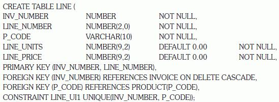

The basic commands and functions of SQL
The basic commands and functions of SQL7 INTRODUCTION TO STRUCTURED QUERY LANGUAGE (SQL)
In this chapter, you will learn:
The basic commands and functions of SQL
How to use SQL for data administration (to create tables and indexes)
How to use SQL for data manipulation (to add, modify, delete, and retrieve data)
How to use SQL to query a database for useful information
Preview
In this chapter, you will learn the basics of Structured Query Language (SQL). SQL, which is pronounced S-Q-L or sequel, is composed of commands that enable users to create database and table structures, perform various types of data manipulation and data administration, and query the database to extract useful information. All relational DBMS software supports SQL, and many software vendors have developed extensions to the basic SQL command set.
Because SQL’s vocabulary is simple, the language is relatively easy to learn. Its simplicity is enhanced by the fact that much of its work takes place behind the scenes. For example, a single command creates the complex table structures required to store and manipulate data successfully. Furthermore, SQL is a nonprocedural language; that is, the user specifies what must be done, but not how. To issue SQL commands, end users and programmers do not need to know the physical data storage format or the complex activities that take place when a SQL command is executed.
Although quite useful and powerful, SQL is not meant to stand alone in the applications arena. Data entry with SQL is possible but awkward, as are data corrections and additions. SQL itself does not create menus, special report forms, overlays, pop-ups, or any of the other utilities and screen devices that end users usually expect. Instead, those features are available as vendor-supplied enhancements. SQL focuses on data definition (creating tables and indexes) and data manipulation (adding, modifying, deleting, and retrieving data); this chapter covers these basic functions. In spite of its limitations, SQL is a powerful tool for extracting information and managing data.
Ideally, a database language allows you to create database and table structures, perform basic data management chores (add, delete, and modify), and perform complex queries designed to transform the raw data into useful information. Moreover, a database language must perform such basic functions with minimal user effort, and its command structure and syntax must be easy to learn. Finally, it must be portable; that is, it must conform to some basic standard so a person does not have to relearn the basics when moving from one RDBMS to another. SQL meets those ideal database language requirements well.
SQL functions fit into two broad categories:
• It is a data definition language (DDL). SQL includes commands to create database objects such as tables, indexes, and views, as well as commands to define access rights to those database objects. Some common data definition commands you will learn are listed in Table 7.1.
TABLE 7.1 SQL Data Definition Commands
COMMAND OR OPTION | DESCRIPTION |
CREATE SCHEMA AUTHORIZATION | Creates a database schema |
CREATE TABLE | Creates a new table in the user’s database schema |
NOT NULL | Ensures that a column will not have null values |
UNIQUE | Ensures that a column will not have duplicate values |
PRIMARY KEY | Defines a primary key for a table |
FOREIGN KEY | Defines a foreign key for a table |
DEFAULT | Defines a default value for a column (when no value is given) |
CHECK | Validates data in an attribute |
CREATE INDEX | Creates an index for a table |
CREATE VIEW | Creates a dynamic subset of rows and columns from one or more tables (see Chapter 8, Advanced SQL) |
ALTER TABLE | Modifies a table’s definition (adds, modifies, or deletes attributes or constraints) |
CREATE TABLE AS | Creates a new table based on a query in the user’s database schema |
DROP TABLE | Permanently deletes a table (and its data) |
DROP INDEX | Permanently deletes an index |
DROP VIEW | Permanently deletes a view |
• It is a data manipulation language (DML). SQL includes commands to insert, update, delete, and retrieve data within the database tables. The data manipulation commands you will learn in this chapter are listed in Table 7.2.
TABLE 7.2 SQL Data Manipulation Commands
COMMAND OR OPTION | DESCRIPTION |
INSERT | Inserts row(s) into a table |
SELECT | Selects attributes from rows in one or more tables or views |
WHERE | Restricts the selection of rows based on a conditional expression |
GROUP BY | Groups the selected rows based on one or more attributes |
HAVING | Restricts the selection of grouped rows based on a condition |
ORDER BY | Orders the selected rows based on one or more attributes |
UPDATE | Modifies an attribute’s values in one or more table’s rows |
DELETE | Deletes one or more rows from a table |
COMMIT | Permanently saves data changes |
ROLLBACK | Restores data to their original values |
Comparison operators | |
=, <, >, <=, >=, <> | Used in conditional expressions |
Logical operators | |
AND/OR/NOT | Used in conditional expressions |
Special operators | Used in conditional expressions |
BETWEEN | Checks whether an attribute value is within a range |
IS NULL | Checks whether an attribute value is null |
LIKE | Checks whether an attribute value matches a given string pattern |
IN | Checks whether an attribute value matches any value within a value list |
EXISTS | Checks whether a subquery returns any rows |
DISTINCT | Limits values to unique values |
Aggregate functions | Used with SELECT to return mathematical summaries on columns |
COUNT | Returns the number of rows with non-null values for a given column |
MIN | Returns the minimum attribute value found in a given column |
MAX | Returns the maximum attribute value found in a given column |
SUM | Returns the sum of all values for a given column |
AVG | Returns the average of all values for a given column |
SQL is relatively easy to learn. Its basic command set has a vocabulary of fewer than 100 words. Better yet, SQL is a nonprocedural language: you merely command what is to be done; you do not have to worry about how. The American National Standards Institute (ANSI) prescribes a standard SQL—the current fully approved version is SQL-2003. The ANSI SQL standards are also accepted by the International Organization for Standardization (ISO), a consortium composed of national standards bodies of more than 150 countries. Although adherence to the ANSI/ISO SQL standard is usually required in commercial and government contract database specifications, many RDBMS vendors add their own special enhancements. Consequently, it is seldom possible to move a SQL-based application from one RDBMS to another without making some changes.
However, even though there are several different SQL “dialects,” their differences are minor. Whether you use Oracle, Microsoft SQL Server, MySQL, IBM’s DB2, Microsoft Access, or any other well-established RDBMS, a software manual should be sufficient to get you up to speed if you know the material presented in this chapter.
At the heart of SQL is the query. In Chapter 1, Database Systems, you learned that a query is a spur-of-the-moment question. Actually, in the SQL environment, the word query covers both questions and actions. Most SQL queries are used to answer questions such as these: “What products currently held in inventory are priced over $100, and what is the quantity on hand for each of those products?” or “How many employees have been hired since January 1, 2008, by each of the company’s departments?” However, many SQL queries are used to perform actions such as adding or deleting table rows or changing attribute values within tables. Still other SQL queries create new tables or indexes. In short, for a DBMS, a query is simply a SQL statement that must be executed. However, before you can use SQL to query a database, you must define the database environment for SQL with its data definition commands.
Before you examine the SQL syntax for creating and defining tables and other elements, first examine a simple database model and the database tables that form the basis for the many SQL examples you will explore in this chapter.
A simple database composed of the following tables is used to illustrate the SQL commands in this chapter: CUSTOMER, INVOICE, LINE, PRODUCT, and VENDOR. This database model is shown in Figure 7.1.

SOURCE: Course Technology/Cengage Learning
The database model in Figure 7.1 reflects the following business rules:
• A customer may generate many invoices. Each invoice is generated by one customer.
• An invoice contains one or more invoice lines. Each invoice line is associated with one invoice.
• Each invoice line references one product. A product may be found in many invoice lines. (You can sell more than one hammer to more than one customer.)
• A vendor may supply many products. Some vendors do not yet supply products. For example, a vendor list may include potential vendors.
• If a product is vendor supplied, it is supplied by only a single vendor.
• Some products are not supplied by a vendor. For example, some products may be produced in-house or bought on the open market.
As you can see in Figure 7.1, the database model contains many tables. However, to illustrate the initial set of data definition commands, the focus of attention will be the PRODUCT and VENDOR tables. You will have the opportunity to use the remaining tables later in this chapter and in the Problems section.
 ONLINE CONTENT
ONLINE CONTENT
The database model in Figure 7.1 is implemented in the Microsoft Access Ch07_SaleCo database, which is available at www.cengagebrain.com. (This database contains a few additional tables that are not reflected in Figure 7.1. These tables are used for discussion purposes only.) If you use MS Access, you can use the database supplied online. However, it is strongly suggested that you create your own database structures so you can practice the SQL commands illustrated in this chapter.
SQL script files for creating the tables and loading the data in Oracle and MS SQL Server are also available at www.cengagebrain.com. How you connect to your database depends on how the software was installed on your computer. Follow the instructions provided by your instructor or school.
To give you a point of reference for understanding the effect of the SQL queries, the contents of the PRODUCT and VENDOR tables are listed in Figure 7.2.
FIGURE 7.2 The VENDOR and PRODUCT tables
SOURCE: Course Technology/Cengage Learning
In the tables, note the following features, which correspond to the business rules reflected in the ERD shown in Figure 7.1
• The VENDOR table contains vendors who are not referenced in the PRODUCT table. Database designers note that possibility by saying that PRODUCT is optional to VENDOR; a vendor may exist without a reference to a product. You examined such optional relationships in detail in Chapter 4, Entity Relationship (ER) Modeling.
• Existing V_CODE values in the PRODUCT table must (and do) have a match in the VENDOR table to ensure referential integrity.
• A few products are supplied factory-direct, a few are made in-house, and a few may have been bought in a warehouse sale. In other words, a product is not necessarily supplied by a vendor. Therefore, VENDOR is optional to PRODUCT.
A few of the conditions just described were made for the sake of illustrating specific SQL features. For example, null V_CODE values were used in the PRODUCT table to illustrate later how you can track such nulls using SQL.
Before you can use a new RDBMS, you must complete two tasks: create the database structure, and create the tables that will hold the end-user data. To complete the first task, the RDBMS creates the physical files that will hold the database. When you create a new database, the RDBMS automatically creates the data dictionary tables in which to store the metadata and creates a default database administrator. Creating the physical files that will hold the database means interacting with the operating system and the file systems supported by the operating system. Therefore, creating the database structure is the one feature that tends to differ substantially from one RDBMS to another. However, it is relatively easy to create a database structure, regardless of which RDBMS you use.
If you use Microsoft Access, creating the database is simple: start Access, click the File tab, click New in the left pane, and then click Blank Database in the right pane. Specify the folder in which you want to store the database, and then name the database. However, if you work in a database environment typically used by larger organizations, you will probably use an enterprise RDBMS such as Oracle, MS SQL Server, MySQL, or DB2. Given their security requirements and greater complexity, creating a database with these products is a more elaborate process. (See Appendix N, Creating a New Database Using Oracle 11g, for specific instructions to create a database structure in Oracle.)
With the exception of creating the database, most RDBMS vendors use SQL that deviates little from the ANSI standard SQL. For example, most RDBMSs require each SQL command to end with a semicolon. However, some SQL implementations do not use a semicolon. Important syntax differences among implementations will be highlighted in the Note boxes in this chapter.
If you are using an enterprise RDBMS, you must be authenticated by the RDBMS before you can start creating tables. Authentication is the process the DBMS uses to verify that only registered users access the database. To be authenticated, you must log on to the RDBMS using a user ID and a password created by the database administrator. In an enterprise RDBMS, every user ID is associated with a database schema.
In the SQL environment, a schema is a logical group of database objects—such as tables and indexes—that are related to each other. Usually, the schema belongs to a single user or application. A single database can hold multiple schemas that belong to different users or applications. Schemas are useful in that they group tables by owner (or function) and enforce a first level of security by allowing each user to see only the tables that belong to that user.
ANSI SQL standards define a command to create a database schema:
CREATE SCHEMA AUTHORIZATION {creator};
Therefore, if the creator is JONES, the following command is used:
CREATE SCHEMA AUTHORIZATION JONES;
Most enterprise RDBMSs support that command. However, the command is seldom used directly—that is, from the command line. (When a user is created, the DBMS automatically assigns a schema to that user.) When the DBMS is used, the CREATE SCHEMA AUTHORIZATION command must be issued by the user who owns the schema. That is, if you log on as JONES, you can only use CREATE SCHEMA AUTHORIZATION JONES.
For most RDBMSs, the CREATE SCHEMA AUTHORIZATION command is optional, which is why this chapter focuses on the ANSI SQL commands required to create and manipulate tables.
In the data dictionary in Table 7.3, note the data types selected. Keep in mind that data-type selection is usually dictated by the nature of the data and the intended use. For example:
• P_PRICE clearly requires some kind of numeric data type; defining it as a character field is not acceptable.
• Just as clearly, a vendor name is an obvious candidate for a character data type. For example, VARCHAR(35) fits well because vendor names are variable-length character strings, and in this case, such strings may be up to 35 characters long.
• At first glance, it might seem logical to select a numeric data type for V_AREACODE because it contains only digits. However, adding and subtracting area codes does not yield meaningful results. Therefore, selecting a character data type is more appropriate. This is true for many common attributes found in business data models. For example, even though zip codes contain all digits, they must be defined as character data because some zip codes begin with the digit zero (0), and a numeric data type would cause the leading zero to be dropped.
• U.S. state abbreviations are always two characters, so CHAR(2) is a logical choice.
• Selecting P_INDATE to be a (Julian) DATE field rather than a character field is desirable because Julian dates allow you to make simple date comparisons and perform date arithmetic. For instance, if you have used DATE fields, you can determine the number of days between dates.
If you use DATE fields, you can also determine a future date using a simple command. For example, you can determine the date that is 60 days from a given P_INDATE by using P_INDATE + 60. Or, you can use the RDBMS’s system date—SYSDATE in Oracle, GETDATE() in MS SQL Server, and Date() in Access—to answer questions such as “What will be the date 60 days from today?” For example, you might use SYSDATE + 60 in Oracle, GETDATE() + 60 in MS SQL Server, or Date() + 60 in Access.
Date arithmetic capability is particularly useful in billing. Perhaps you want your system to start charging interest on a customer balance 60 days after the invoice is generated. Such simple date arithmetic would be impossible if you used a character data type.
Data-type selection sometimes requires professional judgment. For example, you must make a decision about the V_CODE’s data type as follows:
• If you want the computer to generate new vendor codes by adding 1 to the largest recorded vendor code, you must classify V_CODE as a numeric attribute. (You cannot perform mathematical procedures on character data.) The designation INTEGER will ensure that only the counting numbers (integers) can be used. Most SQL implementations also permit the use of SMALLINT for integer values up to six digits.
• If you do not want to perform mathematical procedures based on V_CODE, you should classify it as a character attribute, even though it is composed entirely of numbers. Character data are “quicker” to process in queries. Therefore, when there is no need to perform mathematical procedures on the attribute, store it as a character attribute.
The first option is used to demonstrate the SQL procedures in this chapter.
TABLE 7.3 Data Dictionary for the Ch07_SaleCo Database

FK | = Foreign key |
PK | = Primary key |
CHAR | = Fixed-length character data, 1 to 255 characters |
VARCHAR | = Variable-length character data, 1 to 2,000 characters. VARCHAR is automatically converted to VARCHAR2 in Oracle. |
NUMBER | = Numeric data. NUMBER(9,2) is used to specify numbers that have two decimal places and are up to nine digits long, including the decimal places. |
Some RDBMSs permit the use of a MONEY or a CURRENCY data type. | |
INT | = Integer values only. INT is automatically converted to NUMBER in Oracle. |
SMALLINT | = Small integer values only. SMALLINT is automatically converted to NUMBER in Oracle. |
DATE formats vary. Commonly accepted formats are DD-MON-YYYY, DD-MON-YY, MM/DD/YYYY, and MM/DD/YY. |
* Not all the ranges shown here will be illustrated in this chapter. However, you can use these constraints to practice writing your own.
When you define the attribute’s data type, you must pay close attention to the expected use of the attributes for sorting and data-retrieval purposes. For example, in a real estate application, an attribute that represents the numbers of bathrooms in a home (H_BATH_NUM) could be assigned the CHAR(3) data type because the application will probably not do any addition, multiplication, or division with the number of bathrooms. Based on the CHAR(3) data-type definition, valid H_BATH_NUM values would be ‘2’,‘1’,‘2.5’,‘10’. However, this data-type decision creates potential problems. For example, if an application sorts the homes by number of bathrooms, a query would “see” the value ‘10’ as less than ‘2’, which is clearly incorrect. So, you must consider the expected use of the data to properly define the attribute data type.
The data dictionary in Table 7.3 contains only a few of the data types supported by SQL. For teaching purposes, the selection of data types is limited to ensure that almost any RDBMS can be used to implement the examples. If your RDBMS is fully compliant with ANSI SQL, it will support many more data types than those shown in Table 7.4. Also, many RDBMSs support data types beyond the ones specified in ANSI SQL.
TABLE 7.4 Some Common SQL Data Types
DATA TYPE | FORMAT | COMMENTS |
Numeric | NUMBER(L,D) | The declaration NUMBER(7,2) indicates that numbers will be stored with two decimal places and may be up to seven digits long, including the sign and the decimal place (for example, 12.32 or -134.99). |
INTEGER | May be abbreviated as INT. Integers are (whole) counting numbers, so they cannot be used if you want to store numbers that require decimal places. | |
SMALLINT | Like INTEGER but limited to integer values up to six digits. If your integer values are relatively small, use SMALLINT instead of INT. | |
DECIMAL(L,D) | Like the NUMBER specification, but the storage length is a minimum specification. That is, greater lengths are acceptable, but smaller ones are not. DECIMAL(9,2), DECIMAL(9), and DECIMAL are all acceptable. | |
Character | CHAR(L) | Fixed-length character data for up to 255 characters. If you store strings that are not as long as the CHAR parameter value, the remaining spaces are left unused. |
VARCHAR(L) or VARCHAR2(L) | Therefore, if you specify CHAR(25), strings such as Smith and Katzenjammer are each stored as 25 characters. However, a U.S. area code is always three digits long, so CHAR(3) would be appropriate if you wanted to store such codes. Variable-length character data. The designation VARCHAR2(25) will let you | |
Date | DATE | Store characters up to 25 characters long. However, VARCHAR will not leave unused spaces. Oracle automatically converts VARCHAR to VARCHAR2. |
In addition to the data types shown in Table 7.4, SQL supports several other data types, including TIME, TIMESTAMP, REAL, DOUBLE, and FLOAT, and intervals such as INTERVAL DAY TO HOUR. Many RDBMSs have also expanded the list to include other types of data, such as LOGICAL, CURRENCY, AutoNumber (Access), and sequence (Oracle). However, because this chapter is designed to introduce the basics of SQL, the discussion is limited to the data types summarized in Table 7.4.
7.2.5 CREATING TABLE STRUCTURES
Now you are ready to implement the PRODUCT and VENDOR table structures with the help of SQL, using the CREATE TABLE syntax shown next.
CREATE TABLE tablename (
| column1 | data type | [constraint] [, |
| column2 | data type | [constraint]] [, |
| PRIMARY KEY | (column1 | [, column2])] [, |
| FOREIGN KEY | (column1 | [, column2]) REFERENCES tablename] [, |
| CONSTRAINT | constraint]); |
ONLINE CONTENT
All the SQL commands used in this chapter are located in script files at www.cengagebrain.com. You can copy and paste the SQL commands into your SQL program. Script files are provided for Oracle and SQL Server users.
To make the SQL code more readable, most SQL programmers use one line per column (attribute) definition. In addition, spaces are used to line up the attribute characteristics and constraints. Finally, both table and attribute names are fully capitalized. Those conventions are used in the following examples that create VENDOR and PRODUCT tables and subsequent tables throughout the book.
NOTE
SQL Syntax
Syntax notation for SQL commands used in this book:
| CAPITALS | Required SQL command keywords |
| italics | A parameter provided by the end user (generally required) |
| {a | b | ..} | A mandatory parameter; use one option from the list separated by | |
| [.....] | An optional parameter—anything inside square brackets is optional |
| Tablename | The name of a table |
| Column | The name of an attribute in a table |
| data type | A valid data-type definition |
| constraint | A valid constraint definition |
| condition | A valid conditional expression (evaluates to true or false) |
| columnlist | One or more column names or expressions separated by commas |
| tablelist | One or more table names separated by commas |
| conditionlist | One or more conditional expressions separated by logical operators |
| expression | A simple value (such as 76 or Married) or a formula (such as P_PRICE - 10) |
CREATE TABLE VENDOR (
| V_CODE | INTEGER | NOT NULL | UNIQUE, |
| V_NAME | VARCHAR(35) | NOT NULL, | |
| V_CONTACT | VARCHAR(25) | NOT NULL, | |
| V_AREACODE | CHAR(3) | NOT NULL, | |
| V_PHONE | CHAR(8) | NOT NULL, | |
| V_STATE | CHAR(2) | NOT NULL, |
PRIMARY KEY (V_CODE));
NOTE
• Because the PRODUCT table contains a foreign key that references the VENDOR table, create the VENDOR table first. (In fact, the “M” side of a relationship always references the “1” side. Therefore, in a 1:M relationship, you must always create the table for the “1” side first.)
• If your RDBMS does not support the VARCHAR2 and FCHAR format, use CHAR.
• Oracle accepts the VARCHAR data type and automatically converts it to VARCHAR2.
• If your RDBMS does not support SINT or SMALLINT, use INTEGER or INT. If INTEGER is not supported, use NUMBER.
• If you use Access, you can use the NUMBER data type, but you cannot use the number delimiters at the SQL level. For example, using NUMBER(8,2) to indicate numbers with up to eight characters and two decimal places is fine in Oracle, but you cannot use it in Access—you must use NUMBER without the delimiters.
• If your RDBMS does not support primary and foreign key designations or the UNIQUE specification, delete them from the SQL code shown here.
• If you use the PRIMARY KEY designation in Oracle, you do not need the NOT NULL and UNIQUE specifications.
• The ON UPDATE CASCADE clause is part of the ANSI standard, but it may not be supported by your RDBMS. In that case, delete the ON UPDATE CASCADE clause.
CREATE TABLE PRODUCT (
| P_CODE | VARCHAR(10) | NOT NULL UNIQUE, |
| P_DESCRIPT | VARCHAR(35) | NOT NULL, |
| P_INDATE | DATE | NOT NULL, |
| P_QOH | SMALLINT | NOT NULL, |
| P_MIN | SMALLINT | NOT NULL, |
| P_PRICE | NUMBER(8,2) | NOT NULL, |
| P_DISCOUNT | NUMBER(5,2) | NOT NULL, |
| V_CODE | INTEGER, | |
| PRIMARY KEY (P_CODE), | ||
| FOREIGN KEY (V_CODE) REFERENCES VENDOR ON UPDATE CASCADE); |
As you examine the preceding SQL table-creating command sequences, note the following features:
• The NOT NULL specifications for the attributes ensure that a data entry will be made. When it is crucial to have the data available, the NOT NULL specification will not allow the end user to leave the attribute empty (with no data entry at all). Because this specification is made at the table level and stored in the data dictionary, application programs can use this information to create the data dictionary validation automatically.
• The UNIQUE specification creates a unique index in the respective attribute. Use it to avoid having duplicated values in a column.
• The primary key attributes contain both a NOT NULL and UNIQUE specification, which enforce the entity integrity requirements. If the NOT NULL and UNIQUE specifications are not supported, use PRIMARY KEY without the specifications. (For example, if you designate the PK in MS Access, the NOT NULL and UNIQUE specifications are automatically assumed and are not spelled out.)
• The entire table definition is enclosed in parentheses. A comma is used to separate each table element definition (attributes, primary key, and foreign key).
NOTE
If you are working with a composite primary key, all of the primary key’s attributes are contained within the parentheses and are separated with commas. For example, the LINE table in Figure 7.1 has a primary key that consists of the two attributes INV_NUMBER and LINE_NUMBER. Therefore, you would define the primary key by typing the following:
PRIMARY KEY (INV_NUMBER, LINE_NUMBER),
The order of the primary key components is important because the indexing starts with the first mentioned attribute, then proceeds with the next attribute, and so on. In this example, the line numbers would be ordered within each of the invoice numbers:
| INV_NUMBER | LINE_NUMBER |
| 1001 | 1 |
| 1001 | 2 |
| 1002 | 1 |
| 1003 | 1 |
| 1003 | 2 |
• The ON UPDATE CASCADE specification ensures that if you make a change in any VENDOR’s V_CODE, that change is automatically applied to all foreign key references throughout the system to ensure that referential integrity is maintained. (Although the ON UPDATE CASCADE clause is part of the ANSI standard, some RDBMSs, such as Oracle, do not support it. If your RDBMS does not support the clause, delete it from the code shown here.)
• An RDBMS automatically enforces referential integrity for foreign keys. That is, you cannot have an invalid entry in the foreign key column; at the same time, you cannot delete a vendor row as long as a product row references that vendor.
• The command sequence ends with a semicolon. (Remember that your RDBMS may require you to omit the semicolon.)
NOTE
Note About Column Names
Do not use mathematical symbols such as +, -, and / in your column names; instead, use an underscore to separate words, if necessary. For example, PER-NUM might generate an error message, but PER_NUM is acceptable. Also, do not use reserved words. Reserved words are words used by SQL to perform specific functions. For example, in some RDBMSs, the column name INITIAL will generate the message “invalid column name.”
NOTE
Note to Oracle Users
When you press Enter after typing each line, a line number is automatically generated as long as you do not type a semicolon before pressing Enter. For example, Oracle’s execution of the CREATE TABLE command will look like this:
CREATE TABLE PRODUCT (

In the preceding SQL command sequence, note the following:
• The attribute definition for P_CODE starts in line 2 and ends with a comma at the end of line 3.
• The CONSTRAINT clause (line 3) allows you to define and name a constraint in Oracle. You can name the constraint to meet your own naming conventions. In this case, the constraint was named PRODUCT_P_CODE_PK.
• Examples of constraints are NOT NULL, UNIQUE, PRIMARY KEY, FOREIGN KEY, and CHECK. Additional details about constraints are explained below.
• To define a PRIMARY KEY constraint, you could also use the following syntax: P_CODE VARCHAR2(10) PRIMARY KEY,.
In this case, Oracle would automatically name the constraint.
• Lines 11 and 12 define a FOREIGN KEY constraint name PRODUCT_V_CODE_FK for the attribute V_CODE. The CONSTRAINT clause is generally used at the end of the CREATE TABLE command sequence.
• If you do not name the constraints yourself, Oracle will automatically assign a name. Unfortunately, the Oracle-assigned name makes sense only to Oracle, so you will have a difficult time deciphering it later. You should assign a name that makes sense to human beings!
In Chapter 3, The Relational Database Model, you learned that adherence to rules for entity integrity and referential integrity is crucial in a relational database environment. Fortunately, most SQL implementations support both integrity rules. Entity integrity is enforced automatically when the primary key is specified in the CREATE TABLE command sequence. For example, you can create the VENDOR table structure and set the stage for the enforcement of entity integrity rules by using the following:
PRIMARY KEY (V_CODE)
In the PRODUCT table’s CREATE TABLE sequence, note that referential integrity has been enforced by specifying the following in the PRODUCT table:
FOREIGN KEY (V_CODE) REFERENCES VENDOR ON UPDATE CASCADE
The foreign key constraint definition ensures that:
• You cannot delete a vendor from the VENDOR table if at least one product row references that vendor. This is the default behavior for the treatment of foreign keys.
• On the other hand, if a change is made in an existing VENDOR table’s V_CODE, that change must be reflected automatically in any PRODUCT table V_CODE reference (ON UPDATE CASCADE). That restriction makes it impossible for a V_CODE value to exist in the PRODUCT table if it points to a nonexistent VENDOR table V_CODE value. In other words, the ON UPDATE CASCADE specification ensures the preservation of referential integrity. (Oracle does not support ON UPDATE CASCADE.)
In general, ANSI SQL permits the use of ON DELETE and ON UPDATE clauses to cover CASCADE, SET NULL, or SET DEFAULT.
ONLINE CONTENT
For a more detailed discussion of the options for using the ON DELETE and ON UPDATE clauses, see Appendix D, Converting the ER Model into a Database Structure, Section D.2, General Rules Governing Relationships Among Tables. Appendix D is available at www.cengagebrain.com.
NOTE
Note About Referential Constraint Actions
The support for the referential constraint’s actions varies from product to product. For example:
• MS Access, SQL Server, and Oracle support ON DELETE CASCADE.
• MS Access and SQL Server support ON UPDATE CASCADE.
• Oracle does not support ON UPDATE CASCADE.
• Oracle supports SET NULL.
• MS Access and SQL Server do not support SET NULL.
• Refer to your product manuals for additional information on referential constraints.
While MS Access does not support ON DELETE CASCADE or ON UPDATE CASCADE at the SQL command-line level, it does support them through the relationship window interface. In fact, whenever you try to establish a relationship between two tables in Access, the relationship window interface will automatically pop up.
Besides the PRIMARY KEY and FOREIGN KEY constraints, the ANSI SQL standard also defines the following constraints:
• The NOT NULL constraint ensures that a column does not accept nulls.
• The UNIQUE constraint ensures that all values in a column are unique.
• The DEFAULT constraint assigns a value to an attribute when a new row is added to a table. The end user may, of course, enter a value other than the default value.
• The CHECK constraint is used to validate data when an attribute value is entered. The CHECK constraint does precisely what its name suggests: it checks to see that a specified condition exists. Examples of such constraints include the following:
- The minimum order value must be at least 10.
- The date must be after April 15, 2012.
If the CHECK constraint is met for the specified attribute (that is, the condition is true), the data are accepted for that attribute. If the condition is found to be false, an error message is generated and the data are not accepted.
Note that the CREATE TABLE command lets you define constraints in two different places:
• When you create the column definition (known as a column constraint).
• When you use the CONSTRAINT keyword (known as a table constraint).
A column constraint applies to just one column; a table constraint may apply to many columns. Those constraints are supported at varying levels of compliance by enterprise RDBMSs.
In this chapter, Oracle is used to illustrate SQL constraints. For example, note that the following SQL command sequence uses the DEFAULT and CHECK constraints to define the table named CUSTOMER.
In this case, the CUS_AREACODE attribute is assigned a default value of '615'. Therefore, if a new CUSTOMER table row is added and the end user makes no entry for the area code, the '615' value will be recorded. Also, the CHECK condition restricts the values for the customer’s area code to 615, 713, and 931; any other values will be rejected.
It is important to note that the DEFAULT value applies only when new rows are added to a table, and then only when no value is entered for the customer’s area code. (The default value is not used when the table is modified.) In contrast, the CHECK condition is validated whether a customer row is added or modified. However, while the CHECK condition may include any valid expression, it applies only to the attributes in the table being checked. If you want to check for conditions that include attributes in other tables, you must use triggers. (See Chapter 8, Advanced SQL.) Finally, the last line of the CREATE TABLE command sequence creates a unique index constraint (named CUS_UI1) on the customer’s last name and first name. The index will prevent the entry of two customers with the same last name and first name. (This index merely illustrates the process. Clearly, it should be possible to have more than one person named John Smith in the CUSTOMER table.)
NOTE
Note to MS Access Users
MS Access does not accept the DEFAULT or CHECK constraints. However, MS Access will accept the CONSTRAINT CUS_UI1 UNIQUE (CUS_LNAME, CUS_FNAME) line and create the unique index.
In the following SQL command to create the INVOICE table, the DEFAULT constraint assigns a default date to a new invoice, and the CHECK constraint validates that the invoice date is greater than January 1, 2012.
In this case, notice the following:
• The CUS_CODE attribute definition contains REFERENCES CUSTOMER (CUS_CODE) to indicate that the CUS_CODE is a foreign key. This is another way to define a foreign key.
• The DEFAULT constraint uses the SYSDATE special function. This function always returns today’s date.
• The invoice date (INV_DATE) attribute is automatically given today’s date (returned by SYSDATE) when a new row is added and no value is given for the attribute.
• A CHECK constraint is used to validate that the invoice date is greater than 'January 1, 2012'. When comparing a date to a manually entered date in a CHECK clause, Oracle requires the use of the TO_DATE function. The TO_DATE function takes two parameters: the literal date and the date format used.
The final SQL command sequence creates the LINE table. The LINE table has a composite primary key (INV_NUMBER, LINE_NUMBER) and uses a UNIQUE constraint in INV_NUMBER and P_CODE to ensure that the same product is not ordered twice in the same invoice.

In the creation of the LINE table, note that a UNIQUE constraint is added to prevent the duplication of an invoice line. A UNIQUE constraint is enforced through the creation of a unique index. Also note that the ON DELETE CASCADE foreign key enforces referential integrity. The use of ON DELETE CASCADE is recommended for weak entities to ensure that the deletion of a row in the strong entity automatically triggers the deletion of the corresponding rows in the dependent weak entity. In that case, the deletion of an INVOICE row will automatically delete all of the LINE rows related to the invoice. In the following section, you will learn more about indexes and how to use SQL commands to create them.
You learned in Chapter 3 that indexes can be used to improve the efficiency of searches and to avoid duplicate column values. In the previous section, you saw how to declare unique indexes on selected attributes when the table is created. In fact, when you declare a primary key, the DBMS automatically creates a unique index. Even with this feature, you often need additional indexes. The ability to create indexes quickly and efficiently is important. Using the CREATE INDEX command, SQL indexes can be created on the basis of any selected attribute. The syntax is:
CREATE [UNIQUE] INDEX indexname ON tablename(column1 [, column2])
For example, based on the attribute P_INDATE stored in the PRODUCT table, the following command creates an index named P_INDATEX:
CREATE INDEX P_INDATEX ON PRODUCT(P_INDATE);
SQL does not let you write over an existing index without warning you first, thus preserving the index structure within the data dictionary. Using the UNIQUE index qualifier, you can even create an index that prevents you from using a value that has been used before. Such a feature is especially useful when the index attribute is a candidate key whose values must not be duplicated:
CREATE UNIQUE INDEX P_CODEX ON PRODUCT(P_CODE);
If you now try to enter a duplicate P_CODE value, SQL produces the error message “duplicate value in index.” Many RDBMSs, including Access, automatically create a unique index on the PK attribute(s) when you declare the PK.
A common practice is to create an index on any field that is used as a search key, in comparison operations in a conditional expression, or when you want to list rows in a specific order. For example, if you want to create a report of all products by vendor, it would be useful to create an index on the V_CODE attribute in the PRODUCT table. Remember that a vendor can supply many products. Therefore, you should not create a UNIQUE index in this case. Better yet, to make the search as efficient as possible, using a composite index is recommended.
Unique composite indexes are often used to prevent data duplication. For example, consider the case illustrated in Table 7.5, in which required employee test scores are stored. (An employee can take a test only once on a given date.) Given the structure of Table 7.5, the PK is EMP_NUM + TEST_NUM. The third test entry for employee 111 meets entity integrity requirements—the combination 111,3 is unique—yet the WEA test entry is clearly duplicated.
Table 7.5 A Duplicated Test Record
Such duplication could have been avoided through the use of a unique composite index, using the attributes EMP_NUM, TEST_CODE, and TEST_DATE:
CREATE UNIQUE INDEX EMP_TESTDEX ON TEST(EMP_NUM, TEST_CODE, TEST_DATE);
By default, all indexes produce results that are listed in ascending order, but you can create an index that yields output in descending order. For example, if you routinely print a report that lists all products ordered by price from highest to lowest, you could create an index named PROD_PRICEX by typing:
CREATE INDEX PROD_PRICEX ON PRODUCT(P_PRICE DESC);
To delete an index, use the DROP INDEX command:
DROP INDEX indexname
For example, if you want to eliminate the PROD_PRICEX index, type:
DROP INDEX PROD_PRICEX;
After creating the tables and some indexes, you are ready to start entering data. The following sections use two tables (VENDOR and PRODUCT) to demonstrate most of the data manipulation commands.
7.3 DATA MANIPULATION COMMANDS
In this section, you will learn how to use the basic SQL data manipulation commands INSERT, SELECT, COMMIT, UPDATE, ROLLBACK, and DELETE.
SQL requires the use of the INSERT command to enter data into a table. The INSERT command’s basic syntax looks like this:
INSERT INTO tablename VALUES (value1, value2, ..., valuen)
Because the PRODUCT table uses its V_CODE to reference the VENDOR table’s V_CODE, an integrity violation will occur if the VENDOR table V_CODE values do not yet exist. Therefore, you need to enter the VENDOR rows before the PRODUCT rows. Given the VENDOR table structure defined earlier and the sample VENDOR data shown to in Figure 7.2, you would enter the first two data rows as follows:
INSERT INTO VENDOR
VALUES (21225,'Bryson, Inc.','Smithson','615','223-3234','TN','Y');
INSERT INTO VENDOR
VALUES (21226,'Superloo, Inc.','Flushing','904','215-8995','FL','N');
and so on, until all of the VENDOR table records have been entered.
(To see the contents of the VENDOR table, use the SELECT * FROM VENDOR; command.)
The PRODUCT table rows would be entered in the same fashion, using the PRODUCT data shown in Figure 7.2. For example, the first two data rows would be entered as follows, pressing Enter at the end of each line:
INSERT INTO PRODUCT
VALUES ('11QER/31','Power painter, 15 psi., 3-nozzle','03-Nov-11',8,5,109.99,0.00,25595);
INSERT INTO PRODUCT
VALUES ('13-Q2/P2','7.25-in. pwr. saw blade','13-Dec-11',32,15,14.99, 0.05, 21344);
(To see the contents of the PRODUCT table, use the SELECT * FROM PRODUCT; command.)
NOTE
Date entry is a function of the date format expected by the DBMS. For example, March 25, 2012, might be shown as 25-Mar-2012 in Access and Oracle, or it might be displayed in other presentation formats in another RDBMS. MS Access requires the use of # delimiters when performing any computations or comparisons based on date attributes, as in P_INDATE >= #25-Mar-12#.
In the preceding data-entry lines, observe that:
• The row contents are entered between parentheses. Note that the first character after VALUES is a parenthesis and that the last character in the command sequence is also a parenthesis.
• Character (string) and date values must be entered between apostrophes ( ' ).
• Numerical entries are not enclosed in apostrophes.
• Attribute entries are separated by commas.
• A value is required for each column in the table.
This version of the INSERT command adds one table row at a time.
Inserting Rows with Null Attributes
Thus far, you have entered rows in which all of the attribute values are specified. But what do you do if a product does not have a vendor or if you do not yet know the vendor code? In those cases, you would want to leave the vendor code null. To enter a null, use the following syntax:
INSERT INTO PRODUCT
VALUES ('BRT-345','Titanium drill bit','18-Oct-11', 75, 10, 4.50, 0.06, NULL);
Incidentally, note that the NULL entry is accepted only because the V_CODE attribute is optional—the NOT NULL declaration was not used in the CREATE TABLE statement for this attribute.
Inserting Rows with Optional Attributes
Sometimes, more than one attribute is optional. Rather than declaring each attribute as NULL in the INSERT command, you can indicate just the attributes that have required values. You do that by listing the attribute names inside parentheses after the table name. For the purpose of this example, assume that the only required attributes for the PRODUCT table are P_CODE and P_DESCRIPT:
INSERT INTO PRODUCT(P_CODE, P_DESCRIPT) VALUES ('BRT-345','Titanium drill bit');
Any changes made to the table contents are not saved on disk until you close the database, close the program you are using, or use the COMMIT command. If the database is open and a power outage or some other interruption occurs before you issue the COMMIT command, your changes will be lost and only the original table contents will be retained. The syntax for the COMMIT command is:
COMMIT [WORK]
The COMMIT command permanently saves all changes—such as rows added, attributes modified, and rows deleted—made to any table in the database. Therefore, if you intend to make your changes to the PRODUCT table permanent, it is a good idea to save those changes by using the following command:
COMMIT;
NOTE
Note to MS Access Users
MS Access does not support the COMMIT command because it automatically saves changes after the execution of each SQL command.
However, the COMMIT command’s purpose is not just to save changes. In fact, the ultimate purpose of the COMMIT and ROLLBACK commands (see Section 7.3.5) is to ensure database update integrity in transaction management. (You will see how such issues are addressed in Chapter 10, Transaction Management and Concurrency Control.)
The SELECT command is used to list the contents of a table. The syntax of the SELECT command is as follows:
SELECT columnlist FROM tablename
The columnlist represents one or more attributes, separated by commas. You could use the asterisk ( * ) as a wildcard character to list all attributes. A wildcard character is a symbol that can be used as a general substitute for other characters or commands. For example, to list all attributes and all rows of the PRODUCT table, use:
SELECT * FROM PRODUCT;
Figure 7.3 shows the output generated by that command. (Figure 7.3 shows all of the rows in the PRODUCT table that serve as the basis for subsequent discussions. If you entered only the PRODUCT table’s first two records, as shown in the preceding section, the output of the preceding SELECT command would show only the rows you entered. Don’t worry about the difference between your SELECT output and the output shown in Figure 7.3. When you complete the work in this section, you will have created and populated your VENDOR and PRODUCT tables with the correct rows for use in future sections.)
FIGURE 7.3 The contents of the PRODUCT table
SOURCE: Course Technology/Cengage Learning
NOTE
Your listing may not be in the order shown in Figure 7.3. The listings shown in the figure are the result of system-controlled primary-key-based index operations. You will learn later how to control the output so that it conforms to the order you have specified.
NOTE
Note to Oracle Users
Some SQL implementations (such as Oracle’s) cut the attribute labels to fit the width of the column. However, Oracle lets you set the width of the display column to show the complete attribute name. You can also change the display format, regardless of how the data are stored in the table. For example, if you want to display dollar symbols and commas in the P_PRICE output, you can declare:
COLUMN P_PRICE FORMAT $99,999.99
to change the output 12347.67 to $12,347.67.
In the same manner, to display only the first 12 characters of the P_DESCRIPT attribute, use:
COLUMN P_DESCRIPT FORMAT A12 TRUNCATE
Although SQL commands can be grouped together on a single line, complex command sequences are best shown on separate lines, with space between the SQL command and the command’s components. Using that formatting convention makes it much easier to see the components of the SQL statements, which in turn makes it easy to trace the SQL logic and make corrections if necessary. The number of spaces used in the indention is up to you. For example, note the following format for a more complex statement:
| SELECT | P_CODE, P_DESCRIPT, P_INDATE, P_QOH, P_MIN, P_PRICE, P_DISCOUNT, V_CODE |
| FROM | PRODUCT; |
When you run a SELECT command on a table, the RDBMS returns a set of one or more rows that have the same characteristics as a relational table. In addition, the SELECT command lists all rows from the table you specified in the FROM clause. This is a very important characteristic of SQL commands. By default, most SQL data manipulation commands operate over an entire table (or relation), which is why SQL commands are said to be set-oriented commands. A SQL set-oriented command works over a set of rows. The set may include one or more columns and zero or more rows from one or more tables.
Use the UPDATE command to modify data in a table. The syntax for this command is:
| UPDATE | tablename |
| SET | columnname = expression [, columnname = expression] |
| [WHERE | conditionlist ]; |
For example, if you want to change P_INDATE from December 13, 2011, to January 18, 2012, in the second row of the PRODUCT table (see Figure 7.3), use the primary key (13-Q2/P2) to locate the correct row. Therefore, type:
| UPDATE | PRODUCT |
| SET | P_INDATE = '18-JAN-2012' |
| WHERE | P_CODE = '13-Q2/P2'; |
If more than one attribute is to be updated in the row, separate the corrections with commas:
| UPDATE | PRODUCT |
| SET | P_INDATE = '18-JAN-2012', P_PRICE = 17.99, P_MIN = 10 |
| WHERE | P_CODE = '13-Q2/P2'; |
What would have happened if the previous UPDATE command had not included the WHERE condition? The P_INDATE, P_PRICE, and P_MIN values would have been changed in all rows of the PRODUCT table. Remember, the UPDATE command is a set-oriented operator. Therefore, if you do not specify a WHERE condition, the UPDATE command will apply the changes to all rows in the specified table.
Confirm the correction(s) by using the following SELECT command to check the PRODUCT table’s listing:
SELECT * FROM PRODUCT;
7.3.5 RESTORING TABLE CONTENTS
If you have not yet used the COMMIT command to store the changes permanently in the database, you can restore the database to its previous condition with the ROLLBACK command. ROLLBACK undoes any changes since the last COMMIT command and brings the data back to the values that existed before the changes were made. To restore the data to their “prechange” condition, type:
ROLLBACK;
and then press Enter. Use the SELECT statement again to verify that the ROLLBACK restored the data to their original values.
COMMIT and ROLLBACK work only with data manipulation commands that add, modify, or delete table rows. For example, assume that you perform these actions:
1. CREATE a table called SALES.
2. INSERT 10 rows in the SALES table.
3. UPDATE two rows in the SALES table.
4. Execute the ROLLBACK command.
Will the SALES table be removed by the ROLLBACK command? No, the ROLLBACK command will undo only the results of the INSERT and UPDATE commands. All data definition commands (CREATE TABLE) are automatically committed to the data dictionary and cannot be rolled back. The COMMIT and ROLLBACK commands are examined in greater detail in Chapter 10.
NOTE
Note to MS Access Users
MS Access does not support the ROLLBACK command.
Some RDBMSs, such as Oracle, automatically COMMIT data changes when issuing data definition commands. For example, if you had used the CREATE INDEX command after updating the two rows in the previous example, all previous changes would have been committed automatically; doing a ROLLBACK afterward would not have undone anything. Check your RDBMS manual to understand these subtle differences.
It is easy to delete a table row using the DELETE statement; the syntax is:
| DELETE FROM | tablename |
| [WHERE | conditionlist ]; |
For example, if you want to delete the product you added earlier whose code (P_CODE) is 'BRT-345', use the following command:
| DELETE FROM | PRODUCT |
| WHERE | P_CODE = 'BRT-345'; |
In this example, the primary key value lets SQL find the exact record to be deleted from the PRODUCT table. However, deletions are not limited to a primary key match; any attribute may be used. For example, in your PRODUCT table, you will see several products for which the P_MIN attribute is equal to 5. Use the following command to delete all rows from the PRODUCT table for which the P_MIN is equal to 5:
| DELETE FROM | PRODUCT |
| WHERE | P_MIN = 5; |
Check the PRODUCT table’s contents again to verify that all products with P_MIN equal to 5 have been deleted.
Finally, remember that DELETE is a set-oriented command, and that the WHERE condition is optional. Therefore, if you do not specify a WHERE condition, all rows from the specified table will be deleted!
7.3.7 INSERTING TABLE ROWS WITH A SELECT SUBQUERY
You learned in Section 7.3.1 how to use the INSERT statement to add rows to a table. In that section, you added rows one at a time. In this section, you will learn how to add multiple rows to a table, using another table as the source of the data. The syntax for the INSERT statement is:
INSERT INTO tablename SELECT columnlist FROM tablename;
In this case, the INSERT statement uses a SELECT subquery. A subquery, also known as a nested query or an inner query, is a query that is embedded (or nested) inside another query. The inner query is always executed first by the RDBMS. Given the previous SQL statement, the INSERT portion represents the outer query, and the SELECT portion represents the subquery. You can nest queries (place queries inside queries) many levels deep; in every case, the output of the inner query is used as the input for the outer (higher-level) query. In Chapter 8 you will learn more about the various types of subqueries.
The values returned by the SELECT subquery should match the attributes and data types of the table in the INSERT statement. If the table into which you are inserting rows has one date attribute, one number attribute, and one character attribute, the SELECT subquery should return one or more rows in which the first column has date values, the second column has number values, and the third column has character values.
ONLINE CONTENT
Before you execute the commands in the following sections, you must do the following:
If you are using Oracle or Microsoft SQL Server, run the respective sqlintrodbinit.sql script file at www.cengagebrain.com to create all tables and load the data in the database.
If you are using Access, copy the original Ch07_SaleCo.mdb file from www.cengagebrain.com.
In this section, you will learn how to fine-tune the SELECT command by adding restrictions to the search criteria. When coupled with appropriate search conditions, SELECT is an incredibly powerful tool that enables you to transform data into information. For example, in the following sections, you will learn how to create queries that can answer questions such as these: “What products were supplied by a particular vendor?”, “Which products are priced below $10?”, and “How many products supplied by a given vendor were sold between January 5, 2012, and March 20, 2012?”
7.4.1 SELECTING ROWS WITH CONDITIONAL RESTRICTIONS
You can select partial table contents by placing restrictions on the rows to be included in the output. Use the WHERE clause to add conditional restrictions to the SELECT statement. The following syntax enables you to specify which rows to select:
| SELECT | columnlist |
| FROM | tablelist |
| [WHERE | conditionlist ]; |
The SELECT statement retrieves all rows that match the specified condition(s)—also known as the conditional criteria—you specified in the WHERE clause. The conditionlist in the WHERE clause of the SELECT statement is represented by one or more conditional expressions, separated by logical operators. The WHERE clause is optional. If no rows match the specified criteria in the WHERE clause, you see a blank screen or a message that tells you no rows were retrieved. For example, consider the following query:
| SELECT | P_DESCRIPT, P_INDATE, P_PRICE, V_CODE |
| FROM | PRODUCT |
| WHERE | V_CODE = 21344; |
This query returns the description, date, and price of products with a vendor code of 21344, as shown in Figure 7.4.
FIGURE 7.4 Selected PRODUCT table attributes for VENDOR code 21344
SOURCE: Course Technology/Cengage Learning
MS Access users can use the Access QBE (query by example) query generator. Although the Access QBE generates its own “native” version of SQL, you can also elect to type standard SQL in the Access SQL window, as shown at the bottom of Figure 7.5. The figure shows the Access QBE screen, the SQL window’s QBE-generated SQL, and the listing of the modified SQL.
FIGURE 7.5 The Microsoft Access QBE and its SQL
SOURCE: Course Technology/Cengage Learning
NOTE
Note to MS Access Users
The MS Access QBE interface automatically designates the data source by using the table name as a prefix. You will discover later that the table name prefix is used to avoid ambiguity when the same column name appears in multiple tables. For example, both the VENDOR and PRODUCT tables contain the V_CODE attribute. Therefore, if both tables are used (as they would be in a join), the source of the V_CODE attribute must be specified.
Numerous conditional restrictions can be placed on the selected table contents. For example, the comparison operators shown in Table 7.6 can be used to restrict output.
TABLE 7.6 Comparison Operators
| SYMBOL | MEANING |
| = | Equal to |
| < | Less than |
| <= | Less than or equal to |
| > | Greater than |
| >= | Greater than or equal to |
| <> or != | Not equal to |
The following example uses the “not equal to” operator:
| SELECT | P_DESCRIPT, P_INDATE, P_PRICE, V_CODE |
| FROM | PRODUCT |
| WHERE | V_CODE <> 21344; |
FIGURE 7.6 Selected PRODUCT table attributes for VENDOR codes other than 21344
SOURCE: Course Technology/Cengage Learning
The output, shown in Figure 7.6, lists all of the rows for which the vendor code is not 21344.
Note that, in Figure 7.6, rows with nulls in the V_CODE column (see Figure 7.3) are not included in the SELECT command’s output.
The following command sequence:
| SELECT | P_DESCRIPT, P_QOH, P_MIN, P_PRICE |
| FROM | PRODUCT |
| WHERE | P_PRICE <= 10; |
yields the output shown in Figure 7.7.
FIGURE 7.7 Selected PRODUCT table attributes with a P_PRICE restriction
SOURCE: Course Technology/Cengage Learning
| SELECT | P_CODE, P_DESCRIPT, P_QOH, P_MIN, |
| P_PRICE | |
| FROM | PRODUCT |
| WHERE | P_CODE < '1558-QW1'; |
Using Comparison Operators on Character Attributes
Because computers identify all characters by their numeric American Standard Code for Information Interchange (ASCII) codes, comparison operators may even be used to place restrictions on character-based attributes. Therefore, the command: would be correct and would yield a list of all rows in which the P_CODE is alphabetically less than 1558-QW1. (Because the ASCII code value for the letter B is greater than the value of the letter A, it follows that A is less than B.) Therefore, the output will be generated as shown in Figure 7.8.
FIGURE 7.8 Selected PRODUCT table attributes: the ASCII code effect
SOURCE: Course Technology/Cengage Learning
String (character) comparisons are made from left to right. This left-to-right comparison is especially useful when attributes such as names are to be compared. For example, the string “Ardmore” would be judged greater than the string “Aarenson” but less than the string “Brown”; such results may be used to generate alphabetical listings like those in a phone directory. If the characters 0-9 are stored as strings, the same left-to-right string comparisons can lead to apparent anomalies. For example, the ASCII code for the character “5” is greater than the ASCII code for the character “4,” as expected. Yet, the same “5” will also be judged greater than the string “44” because the first character in the string “44” is less than the string “5.” For that reason, you may get some unexpected results from comparisons when dates or other numbers are stored in character format. For example, the left-to-right ASCII character comparison would force the conclusion that the date “01/01/2012” occurred before “12/31/2011.” Because the leftmost character “0” in “01/01/2012” is less than the leftmost character “1” in “12/31/2011,” “01/01/2012” is less than “12/31/2011.” Naturally, if date strings are stored in a yyyy/mm/dd format, the comparisons will yield appropriate results, but this is a nonstandard date presentation. Therefore, all current RDBMSs support date data types; you should use them. In addition, using date data types gives you the benefit of date arithmetic.
Using Comparison Operators on Dates
Date procedures are often more software-specific than other SQL procedures. For example, the query to list all of the rows in which the inventory stock dates occur on or after January 20, 2012, looks like this:
| SELECT | P_DESCRIPT, P_QOH, P_MIN, P_PRICE, P_INDATE |
| FROM | PRODUCT |
| WHERE | P_INDATE >= '20-Jan-2012'; |
Remember that MS Access users must use the # delimiters for dates. For example, you would use #20-Jan-12# in the preceding WHERE clause. The date-restricted output is shown in Figure 7.9.
FIGURE 7.9 Selected PRODUCT table attributes: date restriction
SOURCE: Course Technology/Cengage Learning
Using Computed Columns and Column Aliases
Suppose that you want to determine the total value of each of the products currently held in inventory. Logically, that determination requires the multiplication of each product’s quantity on hand by its current price. You can accomplish this task with the following command:
| SELECT | P_DESCRIPT, P_QOH, P_PRICE, P_QOH * |
| P_PRICE | |
| FROM | PRODUCT |
FIGURE 7.10 SELECT statement with a computed column
SOURCE: Course Technology/Cengage Learning
Entering the SQL command in Access generates the output shown in Figure 7.10.
SQL accepts any valid expressions (or formulas) in the computed columns. Such formulas can contain any valid mathematical operators and functions that are applied to attributes in any of the tables specified in the FROM clause of the SELECT statement. Note also that Access automatically adds an Expr label to all computed columns. (The first computed column would be labeled Expr1; the second, Expr2; and so on.) Oracle uses the actual formula text as the label for the computed column.
To make the output more readable, the SQL standard permits the use of aliases for any column in a SELECT statement. An alias is an alternate name given to a column or table in any SQL statement.
For example, you can rewrite the previous SQL statement as:
| SELECT | P_DESCRIPT, P_QOH, P_PRICE, P_QOH * P_PRICE AS TOTVALUE |
| FROM | PRODUCT; |
The output of the command is shown in Figure 7.11.
FIGURE 7.11 SELECT statement with a computed column and an alias
SOURCE: Course Technology/Cengage Learning
You could also use a computed column, an alias, and date arithmetic in a single query. For example, assume that you want to get a list of out-of-warranty products that have been stored more than 90 days. In that case, the P_INDATE is at least 90 days less than the current (system) date. The MS Access version of this query is:
| SELECT | P_CODE, P_INDATE, DATE() - 90 AS CUTDATE |
| FROM | PRODUCT |
| WHERE | P_INDATE <= DATE() - 90; |
The Oracle version of the same query is shown here:
| SELECT | P_CODE, P_INDATE, SYSDATE CUTDATE | - 90 AS |
| FROM | PRODUCT | |
| WHERE | P_INDATE <= SYSDATE - 90; |
Note that DATE() and SYSDATE are special functions that return the current date in MS Access and Oracle, respectively. You can use the DATE() and SYSDATE functions anywhere a date literal is expected, such as in the value list of an INSERT statement, in an UPDATE statement when changing the value of a date attribute, or in a SELECT statement, as shown here. Of course, the previous query output would change based on the current date.
Suppose that a manager wants a list of all products, the dates they were received, and the warranty expiration date (90 days from receiving the product). To generate that list, type:
| SELECT | P_CODE, P_INDATE, P_INDATE + 90 AS EXPDATE |
| FROM | PRODUCT; |
Note that you can use all arithmetic operators with date attributes as well as with numeric attributes.
7.4.2 ARITHMETIC OPERATORS: THE RULE OF PRECEDENCE
As you saw in the previous example, you can use arithmetic operators with table attributes in a column list or in a conditional expression. In fact, SQL commands are often used in conjunction with the arithmetic operators shown in Table 7.7.
TABLE 7.7 The Arithmetic Operators
| ARITHMETIC OPERATOR | DESCRIPTION |
| + | Add |
| - | Subtract |
| * | Multiply |
| / | Divide |
| ^ | Raise to the power of (some applications use ** instead of ^) |
Do not confuse the multiplication symbol (*) with the wildcard symbol used by some SQL implementations, such as MS Access; the latter is used only in string comparisons, while the former is used in conjunction with mathematical procedures.
As you perform mathematical operations on attributes, remember the rules of precedence. As the name suggests, the rules of precedence are the rules that establish the order in which computations are completed. For example, note the order of the following computational sequence:
1. Perform operations within parentheses.
2. Perform power operations.
3. Perform multiplications and divisions.
4. Perform additions and subtractions.
The application of the rules of precedence will tell you that 8 + 2 * 5 = 8 + 10 = 18, but (8 + 2) * 5 = 10 * 5 = 50. Similarly, 4 + 5^2 * 3 = 4 + 25 * 3 = 79, but (4 + 5)^2 * 3 = 81 * 3 = 243, while the operation expressed by (4 + 5^2) * 3 yields the answer (4 + 25) * 3 = 29 * 3 = 87.
7.4.3 LOGICAL OPERATORS: AND, OR, AND NOT
In the real world, a search of data normally involves multiple conditions. For example, when you are buying a new house, you look for a certain area, a certain number of bedrooms, bathrooms, stories, and so on. In the same way, SQL allows you to include multiple conditions in a query through the use of logical operators. The logical operators are AND, OR, and NOT. For example, if you want a list of the table contents for either the V_CODE = 21344 or the V_CODE = 24288, you can use the OR operator, as in the following command sequence:
| SELECT | P_DESCRIPT, P_INDATE, P_PRICE, V_CODE |
| FROM | PRODUCT |
| WHERE | V_CODE = 21344 OR V_CODE = 24288; |
FIGURE 7.12 Selected PRODUCT table attributes: the logical OR
SOURCE: Course Technology/Cengage Learning
This command generates the six rows shown in Figure 7.12 that match the logical restriction.
The logical AND has the same SQL syntax requirement as OR. The following command generates a list of all rows for which P_PRICE is less than $50 and for which P_INDATE is a date occurring after January 15, 2012:
| SELECT | P_DESCRIPT, P_INDATE, P_PRICE, V_CODE |
| FROM | PRODUCT |
| WHERE | P_PRICE < 50 |
| AND | P_INDATE > '15-Jan-2012'; |
This command produces the output shown in Figure 7.13.
FIGURE 7.13 Selected PRODUCT table attributes: the logical AND
SOURCE: Course Technology/Cengage Learning
You can combine the logical OR with the logical AND to place further restrictions on the output. For example, suppose that you want a table listing for the following conditions:
• The P_INDATE is after January 15, 2012, and the P_PRICE is less than $50.
• Or the V_CODE is 24288.
The required listing can be produced by using the following:
| SELECT | P_DESCRIPT, P_INDATE, P_PRICE, V_CODE |
| FROM | PRODUCT |
| WHERE | (P_PRICE < 50 AND P_INDATE > '15-Jan-2012') |
| OR | V_CODE = 24288; |
Note the use of parentheses to combine logical restrictions. Where you place the parentheses depends on how you want the logical restrictions to be executed. Conditions listed within parentheses are always executed first. The preceding query yields the output shown in Figure 7.14.
FIGURE 7.14 Selected PRODUCT table attributes: the logical AND and OR
SOURCE: Course Technology/Cengage Learning
Note that the three rows with the V_CODE = 24288 are included regardless of the P_INDATE and P_PRICE entries for those rows.
The use of the logical operators OR and AND can become quite complex when numerous restrictions are placed on the query. In fact, a specialty field in mathematics known as Boolean algebra is dedicated to the use of logical operators.
The logical operator NOT is used to negate the result of a conditional expression. That is, in SQL, all conditional expressions evaluate to true or false. If an expression is true, the row is selected; if an expression is false, the row is not selected.
The NOT logical operator is typically used to find the rows that do not match a certain condition. For example, if you want to see a listing of all rows for which the vendor code is not 21344, use the following command sequence:
| SELECT | * |
| FROM | PRODUCT |
| WHERE | NOT (V_CODE = 21344); |
Note that the condition is enclosed in parentheses; that practice is optional, but it is highly recommended for clarity. The logical NOT can be combined with AND and OR.
NOTE
If your SQL version does not support the logical NOT, you can generate the required output by using the following condition:
WHERE V_CODE <> 21344
If your version of SQL does not support <>, use:
WHERE V_CODE != 21344
ANSI-standard SQL allows the use of special operators in conjunction with the WHERE clause. These special operators include:
BETWEEN: Used to check whether an attribute value is within a range
IS NULL: Used to check whether an attribute value is null
LIKE: Used to check whether an attribute value matches a given string pattern
IN: Used to check whether an attribute value matches any value within a value list
EXISTS: Used to check whether a subquery returns any rows
The BETWEEN Special Operator
If you use software that implements a standard SQL, the operator BETWEEN may be used to check whether an attribute value is within a range of values. For example, if you want to see a listing for all products whose prices are between $50 and $100, use the following command sequence:
| SELECT | * |
| FROM | PRODUCT |
| WHERE | P_PRICE BETWEEN 50.00 AND 100.00; |
NOTE
Note to Oracle Users
When using the BETWEEN special operator, always specify the lower range value first. If you list the higher range value first, Oracle will return an empty result set.
If your DBMS does not support BETWEEN, you can use:
| SELECT | * |
| FROM | PRODUCT |
| WHERE | P_PRICE > 50.00 AND P_PRICE < 100.00; |
The IS NULL Special Operator
Standard SQL allows the use of IS NULL to check for a null attribute value. For example, suppose that you want to list all products that do not have a vendor assigned (V_CODE is null). Such a null entry could be found by using the following command sequence:
| SELECT | P_CODE, P_DESCRIPT, V_CODE |
| FROM | PRODUCT |
| WHERE | V_CODE IS NULL; |
Similarly, if you want to check a null date entry, the command sequence is:
| SELECT | P_CODE, P_DESCRIPT, P_INDATE |
| FROM | PRODUCT |
| WHERE | P_INDATE IS NULL; |
Note that SQL uses a special operator to test for nulls. Why? Couldn’t you just enter a condition such as “V_CODE = NULL”? No. Technically, NULL is not a “value” the way the number 0 or the blank space is; instead, a NULL is a special property of an attribute that represents precisely the absence of any value.
The LIKE Special Operator
The LIKE special operator is used in conjunction with wildcards to find patterns within string attributes. Standard SQL allows you to use the percent sign (%) and underscore (_) wildcard characters to make matches when the entire string is not known:
• % means any and all following or preceding characters are eligible. For example:
'J%' includes Johnson, Jones, Jernigan, July, and J-231Q. 'Jo%' includes Johnson and Jones. '%n' includes Johnson and Jernigan.
• _ means any one character may be substituted for the underscore. For example:
_23-456-6789' includes 123-456-6789, 223-456-6789, and 323-456-6789.
_23-_56-678_' includes 123-156-6781, 123-256-6782, and 823-956-6788.
'_o_es' includes Jones, Cones, Cokes, totes, and roles.
NOTE
Some RDBMSs, such as Microsoft Access, use the wildcard characters * and ? instead of % and _.
For example, the following query would find all VENDOR rows for contacts whose last names begin with Smith.
| SELECT | V_NAME, V_CONTACT, V_AREACODE, V_PHONE |
| FROM | VENDOR |
| WHERE | V_CONTACT LIKE 'Smith%'; |
If you check the original VENDOR data in Figure 7.2 again, you’ll see that this SQL query yields three records: two Smiths and one Smithson.
Keep in mind that most SQL implementations yield case-sensitive searches. For example, Oracle will not yield a result that includes Jones if you use the wildcard search delimiter 'jo%' in a search for last names; Jones begins with a capital J, and your wildcard search starts with a lowercase j. On the other hand, MS Access searches are not case sensitive.
For example, suppose that you typed the following query in Oracle:
| SELECT | V_NAME, V_CONTACT, V_AREACODE, V_PHONE |
| FROM | VENDOR |
| WHERE | V_CONTACT LIKE 'SMITH%'; |
No rows will be returned because character-based queries may be case sensitive. That is, an uppercase character has a different ASCII code than a lowercase character, causing SMITH, Smith, and smith to be evaluated as different (unequal) entries. Because the table contains no vendor whose last name begins with SMITH (in uppercase), the 'SMITH%' used in the query cannot be matched. Matches can be made only when the query entry is written exactly like the table entry.
Some RDBMSs, such as Microsoft Access, automatically make the necessary conversions to eliminate case sensitivity. Others, such as Oracle, provide a special UPPER function to convert both table and query character entries to uppercase. (The conversion is done in the computer’s memory only; the conversion has no effect on how the value is actually stored in the table.) So, if you want to avoid a no-match result based on case sensitivity, and if your RDBMS allows the use of the UPPER function, you can generate the same results by using the following query:
| SELECT | V_NAME, V_CONTACT, V_AREACODE, V_PHONE |
| FROM | VENDOR |
| WHERE | UPPER(V_CONTACT) LIKE 'SMITH%'; |
The preceding query produces a list that includes all rows containing a last name that begins with Smith, regardless of uppercase or lowercase letter combinations such as Smith, smith, and SMITH.
The logical operators may be used in conjunction with the special operators. For instance, the following query:
| SELECT | V_NAME, V_CONTACT, V_AREACODE, V_PHONE |
| FROM | VENDOR |
| WHERE | V_CONTACT NOT LIKE 'Smith%'; |
will yield an output of all vendors whose names do not start with Smith.
Suppose that you do not know whether a person’s name is spelled Johnson or Johnsen. The wildcard character _ lets you find a match for either spelling. The proper search would be instituted by the following query:
| SELECT | * |
| FROM | VENDOR |
| WHERE | V_CONTACT LIKE 'Johns_n'; |
Thus, the wildcards allow you to make matches when only approximate spellings are known. Wildcard characters may be used in combinations. For example, the wildcard search based on the string '_l%' can yield the strings “Al”, “Alton”, “Elgin”, “Blakeston”, “blank”, “bloated”, and “eligible”.
The IN Special Operator
Many queries that would require the use of the logical OR can be more easily handled with the help of the special operator IN. For example, the following query:
| SELECT | * |
| FROM | PRODUCT |
| WHERE | V_CODE = 21344 |
| OR | V_CODE = 24288; |
can be handled more efficiently with:
| SELECT | * |
| FROM | PRODUCT |
| WHERE | V_CODE IN (21344, 24288); |
Note that the IN operator uses a value list. All of the values in the list must be of the same data type. Each of the values in the value list is compared to the attribute—in this case, V_CODE. If the V_CODE value matches any of the values in the list, the row is selected. In this example, the rows selected will be only those in which the V_CODE is either 21344 or 24288.
If the attribute used is of a character data type, the list values must be enclosed in single quotation marks. For instance, if the V_CODE had been defined as CHAR(5) when the table was created, the preceding query would have read:
| SELECT | * |
| FROM | PRODUCT |
| WHERE | V_CODE IN ('21344', '24288'); |
The IN operator is especially valuable when it is used in conjunction with subqueries. For example, suppose that you want to list the V_CODE and V_NAME of only those vendors who provide products. In that case, you could use a subquery within the IN operator to automatically generate the value list. The query would be:
| SELECT | V_CODE, V_NAME |
| FROM | VENDOR |
| WHERE | V_CODE IN (SELECT V_CODE FROM PRODUCT); |
The preceding query will be executed in two steps:
1. The inner query or subquery will generate a list of V_CODE values from the PRODUCT tables. Those V_CODE values represent the vendors who supply products.
2. The IN operator will compare the values generated by the subquery to the V_CODE values in the VENDOR table, and will select only the rows with matching values—that is, the vendors who provide products.
The IN special operator will receive additional attention in Chapter 8, where you will learn more about subqueries.
The EXISTS Special Operator
The EXISTS special operator can be used whenever there is a requirement to execute a command based on the result of another query. That is, if a subquery returns any rows, run the main query; otherwise, do not. For example, the following query will list all vendors, but only if there are products to order:
| FROM | VENDOR |
| WHERE | EXISTS (SELECT * FROM PRODUCT WHERE P_QOH <= P_MIN); |
The EXISTS special operator is used in the following example to list all vendors, but only if there are products with the quantity on hand, and less than double the minimum quantity:
| SELECT | * |
| FROM | VENDOR |
| WHERE | EXISTS (SELECT * FROM PRODUCT WHERE P_QOH < P_MIN * 2); |
The EXISTS special operator will receive additional attention in Chapter 8, where you will learn more about subqueries.
7.5 ADDITIONAL DATA DEFINITION COMMANDS
In this section, you will learn how to change table structures by changing attribute characteristics and by adding columns. Then you will learn how to make advanced data updates to the new columns. Finally, you will learn how to copy tables or parts of tables and how to delete tables.
All changes in the table structure are made by using the ALTER TABLE command, followed by a keyword that produces the specific change you want to make. Three options are available: ADD, MODIFY, and DROP. You use ADD to add a column, MODIFY to change column characteristics, and DROP to delete a column from a table. Most RDBMSs do not allow you to delete a column unless the column does not contain any values; otherwise, such an action might delete crucial data used by other tables. The basic syntax to add or modify columns is:
ALTER TABLE tablename
{ADD | MODIFY} (columnname datatype [ {ADD | MODIFY} columnname datatype]) ;
The ALTER TABLE command can also be used to add table constraints. In those cases, the syntax would be:
ALTER TABLE tablename
ADD constraint [ ADD constraint ] ;
where constraint refers to a constraint definition similar to those you learned in Section 7.2.6.
You could also use the ALTER TABLE command to remove a column or table constraint. The syntax would be as follows:
ALTER TABLE tablename
DROP{PRIMARY KEY | COLUMN columnname | CONSTRAINT constraintname };
Notice that when removing a constraint, you need to specify it by name, which is one reason you should always name constraints in your CREATE TABLE or ALTER TABLE statement.
7.5.1 CHANGING A COLUMN’S DATA TYPE
Using the ALTER syntax, the integer V_CODE in the PRODUCT table can be changed to a character V_CODE by using the following command:
ALTER TABLE PRODUCT
MODIFY (V_CODE CHAR(5));
Some RDBMSs, such as Oracle, do not let you change data types unless the column to be changed is empty. For example, if you want to change the V_CODE field from the current number definition to a character definition, the preceding command will yield an error message because the V_CODE column already contains data. The error message is easily explained. Remember that the V_CODE in PRODUCT references the V_CODE in VENDOR. If you change the V_CODE data type, the data types do not match, and there is a referential integrity violation, which triggers the error message. If the V_CODE column does not contain data, the preceding command sequence will alter the table structure as expected (if the foreign key reference was not specified during the creation of the PRODUCT table).
7.5.2 CHANGING A COLUMN’S DATA CHARACTERISTICS
If the column to be changed already contains data, you can make changes in the column’s characteristics if those changes do not alter the data type. For example, if you want to increase the width of the P_PRICE column to nine digits, use the following command:
ALTER TABLE PRODUCT
MODIFY (P_PRICE DECIMAL(9,2));
If you now list the table contents, you can see that the column width of P_PRICE has increased by one digit.
NOTE
Some DBMSs impose limitations on when it is possible to change attribute characteristics. For example, Oracle lets you increase (but not decrease) the size of a column because an attribute modification will affect the integrity of the data in the database. In fact, some attribute changes can be made only when there are no data in any rows for the affected attribute.
You can alter an existing table by adding one or more columns. In the following example, you add the column named P_SALECODE to the PRODUCT table. (This column will be used later to determine whether goods that have been in inventory for a certain length of time should be placed on special sale.)
Suppose that you expect the P_SALECODE entries to be 1, 2, or 3. Because no arithmetic will be performed with the P_SALECODE, the P_SALECODE will be classified as a single-character attribute. Note the inclusion of all required information in the following ALTER command:
ALTER TABLE PRODUCT
ADD (P_SALECODE CHAR(1));
ONLINE CONTENT
If you are using the MS Access databases provided at www.cengagebrain.com, you can track each of the updates in the following sections. For example, look at the copies of the PRODUCT table in the Ch07_SaleCo database, one named PRODUCT_2 and one named PRODUCT_3. Each of the two copies includes the new P_SALECODE column. If you want to see the cumulative effect of all UPDATE commands, you can continue using the PRODUCT table with the P_SALECODE modification and all of the changes you will make in the following sections. (You might even want to use both options, first to examine the individual effects of the update queries and then to examine the cumulative effects.)
When adding a column, be careful not to include the NOT NULL clause for the new column. Doing so will cause an error message; if you add a new column to a table that already has rows, the existing rows will default to a value of null for the new column. Therefore, it is not possible to add the NOT NULL clause for this new column. (Of course, you can add the NOT NULL clause to the table structure after all the data for the new column have been entered and the column no longer contains nulls.)
Occasionally, you might want to modify a table by deleting a column. Suppose that you want to delete the V_ORDER attribute from the VENDOR table. You would use the following command:
ALTER TABLE VENDOR
DROP COLUMN V_ORDER;
Again, some RDBMSs impose restrictions on attribute deletion. For example, you may not drop attributes that are involved in foreign key relationships, nor may you delete an attribute if it is the only one in a table.
To make changes to data in the columns of existing rows, use the UPDATE command. Do not confuse the INSERT and UPDATE commands: INSERT creates new rows in the table, while UPDATE changes rows that already exist. For example, to enter the P_SALECODE value ‘2’ in the fourth row, use the UPDATE command together with the primary key P_CODE ‘1546-QQ2’. Enter the value by using the following command sequence:
| UPDATE | PRODUCT |
| SET | P_SALECODE = ‘2’ |
| WHERE | P_CODE = '1546-QQ2'; |
Subsequent data can be entered the same way, defining each entry location by its primary key (P_CODE) and its column location (P_SALECODE). For example, if you want to enter the P_SALECODE value '1' for the P_CODE values '2232/QWE' and '2232/QTY', you use:
| UPDATE | PRODUCT |
| SET | P_SALECODE = '1' |
| WHERE | P_CODE IN ('2232/QWE', '2232/QTY'); |
If your RDBMS does not support IN, use the following command:
| UPDATE | PRODUCT |
| SET | P_SALECODE = '1' |
| WHERE | P_CODE = '2232/QWE' OR P_CODE = '2232/QTY'; |
You can check the results of your efforts by using the following commands:
| SELECT | P_CODE, P_DESCRIPT, P_INDATE, P_PRICE, P_SALECODE |
| FROM | PRODUCT; |
Although the UPDATE sequences just shown allow you to enter values into specified table cells, the process is very cumbersome. Fortunately, if a relationship can be established between the entries and the existing columns, the relationship can be used to assign values to their appropriate slots. For example, suppose that you want to place sales codes into the table based on the P_INDATE using the following schedule:
| P_INDATE | P_SALECODE |
| before December 25, 2011 | 2 |
| between January 16, 2012, and February 10, 2012 | 1 |
Using the PRODUCT table, the following two command sequences make the appropriate assignments:
| UPDATE | PRODUCT |
| SET | P_SALECODE = '2' |
| WHERE | P_INDATE < '25-Dec-2011'; |
| UPDATE | PRODUCT |
| SET | P_SALECODE = '1' |
| WHERE | P_INDATE >= '16-Jan-2012' AND P_INDATE <='10-Feb-2012'; |
To check the results of those two command sequences, use:
| SELECT | P_CODE, P_DESCRIPT, P_INDATE, P_PRICE, P_SALECODE |
| FROM | PRODUCT; |
If you have made all of the updates shown in this section using Oracle, your PRODUCT table should look like Figure 7.15. Make sure that you issue a COMMIT statement to save these changes.
FIGURE 7.15 The cumulative effect of the multiple updates in the PRODUCT table (Oracle)
SOURCE: Course Technology/Cengage Learning
The arithmetic operators are particularly useful in data updates. For example, if the quantity on hand in your PRODUCT table has dropped below the minimum desirable value, you will order more of the product. Suppose, for example, that you have ordered 20 units of product 2232/QWE. When the 20 units arrive, you will want to add them to inventory using the following commands:
| UPDATE | PRODUCT |
| SET | P_QOH = P_QOH + 20 |
| WHERE | P_CODE = '2232/QWE'; |
If you want to add 10 percent to the price for all products that have current prices below $50, you can use:
| UPDATE | PRODUCT |
| SET | P_PRICE = P_PRICE * 1.10 |
| WHERE | P_PRICE < 50.00; |
If you are using Oracle, issue a ROLLBACK command to undo the changes made by the last two UPDATE statements.
NOTE
If you fail to roll back the changes of the preceding UPDATE queries, the output of the subsequent queries will not match the results shown in the figures. Therefore:
• If you are using Oracle, use the ROLLBACK command to restore the database to its previous state.
• If you are using Access, copy the original Ch07_SaleCo.mdb file from www.cengagebrain.com.
As you will discover in later chapters on database design, sometimes it is necessary to break up a table structure into several component parts (or smaller tables). Fortunately, SQL allows you to copy the contents of selected table columns so that the data need not be reentered manually into the newly created table(s). For example, if you want to copy P_CODE, P_DESCRIPT, P_PRICE, and V_CODE from the PRODUCT table to a new table named PART, you create the PART table structure first, as follows:
CREATE TABLE PART(
| PART_CODE | CHAR(8), |
| PART_DESCRIPT | CHAR(35), |
| PART_PRICE | DECIMAL(8,2), |
| V_CODE | INTEGER, |
PRIMARY KEY (PART_CODE));
Note that the PART column names need not be identical to those of the original table and that the new table need not have the same number of columns as the original table. In this case, the first column in the PART table is PART_CODE, rather than the original P_CODE in the PRODUCT table. Also, the PART table contains only four columns rather than the eight columns in the PRODUCT table. However, column characteristics must match; you cannot copy a character-based attribute into a numeric structure, and vice versa.
Next, you need to add the rows to the PRODUCT table rows and the INSERT command you learned in Section 7.3.7. The syntax is:
| INSERT INTO | target_tablename[(target_columnlist)] |
| SELECT | source_columnlist |
| FROM | source_tablename; |
Note that the target column list is required if the source column list does not match all of the attribute names and characteristics of the target table (including the order of the columns). Otherwise, you do not need to specify the target column list. In this example, you must specify the target column list in the following INSERT command because the column names of the target table are different:
| INSERT INTO PART | (PART_CODE, PART_DESCRIPT, PART_PRICE, V_CODE) |
| SELECT | P_CODE, P_DESCRIPT, P_PRICE, V_CODE FROM PRODUCT; |
FIGURE 7.16 PART table attributes copied from the PRODUCT table
SOURCE: Course Technology/Cengage Learning
The contents of the PART table can now be examined by using the following query to generate the new PART table’s contents, shown in Figure 7.16:
SELECT * FROM PART;
SQL provides another way to rapidly create a new table based on selected columns and rows of an existing table. In this case, the new table will copy the attribute names, data characteristics, and rows of the original table. The Oracle version of the command is:
CREATE TABLE PART AS
| SELECT | P_CODE AS PART_CODE, P_DESCRIPT AS |
| PART_DESCRIPT, P_PRICE AS PART_PRICE, V_CODE | |
| FROM | PRODUCT; |
If the PART table already exists, Oracle will not let you overwrite the existing table. To run this command, you must first delete the existing PART table. (See Section 7.5.8.)
The MS Access version of this command is:
| SELECT | P_CODE AS PART_CODE, P_DESCRIPT AS PART_DESCRIPT, P_PRICE AS PART_PRICE, |
| V_CODE INTO PART | |
| FROM | PRODUCT; |
If the PART table already exists, MS Access will ask if you want to delete the existing table and continue with the creation of the new PART table.
The SQL command just shown creates a new PART table with PART_CODE, PART_DESCRIPT, PART_PRICE, and V_CODE columns. In addition, all of the data rows for the selected columns will be copied automatically. However, note that no entity integrity (primary key) or referential integrity (foreign key) rules are automatically applied to the new table. In the next section, you will learn how to define the PK to enforce entity integrity and the FK to enforce referential integrity.
7.5.7 ADDING PRIMARY AND FOREIGN KEY DESIGNATIONS
When you create a new table based on another table, the new table does not include integrity rules from the old table. In particular, there is no primary key. To define the primary key for the new PART table, use the following command:
| ALTER TABLE | PART |
| ADD | PRIMARY KEY (PART_CODE); |
Several other scenarios could leave you without entity and referential integrity. For example, you might have forgotten to define the primary and foreign keys when you created the original tables. Or, if you imported tables from a different database, you might have discovered that the importing procedure did not transfer the integrity rules. In any case, you can reestablish the integrity rules by using the ALTER command. For example, if the PART table’s foreign key has not yet been designated, it can be designated by:
| ALTER TABLE | PART |
| ADD | FOREIGN KEY (V_CODE) REFERENCES VENDOR; |
Alternatively, if neither the PART table’s primary key nor its foreign key has been designated, you can incorporate both changes at once:
| ALTER TABLE | PART |
| ADD | PRIMARY KEY (PART_CODE) |
| ADD | FOREIGN KEY (V_CODE) REFERENCES VENDOR; |
Even composite primary keys and multiple foreign keys can be designated in a single SQL command. For example, if you want to enforce the integrity rules for the LINE table shown in Figure 7.1, you can use:
| ALTER TABLE | LINE |
| ADD | PRIMARY KEY (INV_NUMBER, LINE_NUMBER) |
| ADD | FOREIGN KEY (INV_NUMBER) REFERENCES INVOICE |
| ADD | FOREIGN KEY (P_CODE) REFERENCES PRODUCT; |
7.5.8 DELETING A TABLE FROM THE DATABASE
A table can be deleted from the database using the DROP TABLE command. For example, you can delete the PART table you just created with the following command:
DROP TABLE PART;
You can drop a table only if it is not the “one” side of any relationship. If you try to drop a table otherwise, the RDBMS will generate an error message indicating that a foreign key integrity violation has occurred.
7.6 ADDITIONAL SELECT QUERY KEYWORDS
One of the most important advantages of SQL is its ability to produce complex free-form queries. The logical operators that were introduced earlier to update table contents work just as well in the query environment. In addition, SQL provides useful functions that count, find minimum and maximum values, calculate averages, and so on. Better yet, SQL allows the user to limit queries to only those entries that have no duplicates or entries whose duplicates can be grouped.
The ORDER BY clause is especially useful when the listing order is important to you. The syntax is:
| SELECT | columnlist |
| FROM | tablelist |
| [WHERE | conditionlist ] |
| [ORDER BY | columnlist [ASC | DESC] ] ; |
Although you have the option of declaring the order type—ascending or descending—the default order is ascending. For example, if you want the contents of the PRODUCT table to be listed by P_PRICE in ascending order, use the following commands:
| SELECT | P_CODE, P_DESCRIPT, P_INDATE, P_PRICE |
| FROM | PRODUCT |
| ORDER BY | P_PRICE; |
The output is shown in Figure 7.17. Note that ORDER BY yields an ascending price listing.
Comparing the listing in Figure 7.17 to the actual table contents shown earlier in Figure 7.2, you will see that the lowest-priced product is listed first in Figure 7.17, followed by the next lowest-priced product, and so on. However, although ORDER BY produces a sorted output, the actual table contents are unaffected by the ORDER BY command.
FIGURE 7.17 Selected PRODUCT table attributes: ordered by ascending P_PRICE
SOURCE: Course Technology/Cengage Learning
To produce the list in descending order, you would enter:
| SELECT | P_CODE, P_DESCRIPT, P_INDATE, P_PRICE |
| FROM | PRODUCT |
| ORDER BY | P_PRICE DESC; |
Ordered listings are used frequently. For example, suppose that you want to create a phone directory. It would be helpful if you could produce an ordered sequence (last name, first name, initial) in three stages:
1. ORDER BY last name.
2. Within the last names, ORDER BY first name.
3. Within the first and last names, ORDER BY middle initial.
Such a multilevel ordered sequence is known as a cascading order sequence, and it can be created easily by listing several attributes, separated by commas, after the ORDER BY clause.
The cascading order sequence is the basis for any telephone directory. To illustrate a cascading order sequence, use the following SQL command on the EMPLOYEE table:
| SELECT | EMP_LNAME, EMP_FNAME, EMP_INITIAL, EMP_AREACODE, EMP_PHONE |
| FROM | EMPLOYEE |
| ORDER BY | EMP_LNAME, EMP_FNAME, EMP_INITIAL; |
This command yields the results shown in Figure 7.18.
FIGURE 7.18 Telephone list query results
SOURCE: Course Technology/Cengage Learning
The ORDER BY clause is useful in many applications, especially because the DESC qualifier can be invoked. For example, listing the most recent items first is a standard procedure. Typically, invoice due dates are listed in descending order. Or, if you want to examine budgets, it is probably useful to list the largest budget line items first.
FIGURE 7.19 A query based on multiple restrictions
SOURCE: Course Technology/Cengage Learning
You can use the ORDER BY clause in conjunction with other SQL commands, too. For example, note the use of restrictions on date and price in the following command sequence:
| SELECT | P_DESCRIPT, V_CODE, P_INDATE, P_PRICE |
| FROM | PRODUCT |
| WHERE | P_INDATE < '21-Jan-2012' |
| AND | P_PRICE <= 50.00 |
| ORDER BY | V_CODE, P_PRICE DESC; |
The output is shown in Figure 7.19. Note that within each V_CODE, the P_PRICE values are in descending order.
How many different vendors are currently represented in the PRODUCT table? A simple listing (SELECT) is not very useful if the table contains several thousand rows and you have to sift through the vendor codes manually. Fortunately, SQL’s DISTINCT clause produces a list of only those values that are different from one another. For example, the command:
| SELECT | DISTINCT V_CODE |
| FROM | PRODUCT; |
yields only the different vendor codes (V_CODE) in the PRODUCT table, as shown in Figure 7.20. Note that the first output row shows the null. The placement of nulls does not affect the list contents. In Oracle, you could use ORDER BY V_CODE NULLS FIRST to place nulls at the top of the list.
SQL can perform various mathematical summaries for you, such as counting the number of rows that contain a specified condition, finding the minimum or maximum values for a specified attribute, summing the values in a specified column, and averaging the values in a specified column. Those aggregate functions are shown in Table 7.8.
FIGURE 7.20 A listing of distinct V_CODE values in the PRODUCT table
SOURCE: Course Technology/Cengage Learning
NOTE
If the ordering column has nulls, they are listed either first or last, depending on the RDBMS. The ORDER BY clause must always be listed last in the SELECT command sequence.
TABLE 7.8 Some Basic SQL Aggregate Functions
FUNCTION |
OUTPUT |
COUNT |
The number of rows containing non-null values |
MIN |
The minimum attribute value encountered in a given column |
MAX |
The maximum attribute value encountered in a given column |
SUM |
The sum of all values for a given column |
AVG |
The arithmetic mean (average) for a specified column |
To illustrate another standard SQL command format, most of the remaining input and output sequences are presented using the Oracle RDBMS.
COUNT
The COUNT function is used to tally the number of non-null values of an attribute. COUNT can be used in conjunction with the DISTINCT clause. For example, suppose that you want to find out how many different vendors are in the PRODUCT table. The answer, generated by the first SQL code set shown in Figure 7.21, is 6. Note that the nulls are not counted as V_CODE values.
FIGURE 7.21 COUNT function output examples
SOURCE: Course Technology/Cengage Learning
The aggregate functions can be combined with the SQL commands explored earlier. For example, the second SQL command set in Figure 7.21 supplies the answer to the question, “How many vendors referenced in the PRODUCT table have supplied products with prices that are less than or equal to $10?” The answer is that three vendors’ products meet the price specification.
The COUNT aggregate function uses one parameter within parentheses, generally a column name such as COUNT(V_CODE) or COUNT(P_CODE). The parameter may also be an expression such as COUNT(DISTINCT V_CODE) or COUNT(P_PRICE+10). Using that syntax, COUNT always returns the number of non-null values in the given column. (Whether the column values are computed or show stored table row values is immaterial.) In contrast, the syntax COUNT(*) returns the number of total rows from the query, including the rows that contain nulls. In the example in Figure 7.21, SELECT COUNT(P_CODE) FROM PRODUCT and SELECT COUNT(*) FROM PRODUCT will yield the same answer because there are no null values in the P_CODE primary key column.
Note that the third SQL command set in Figure 7.21 uses the COUNT(*) command to answer the question, “How many rows in the PRODUCT table have a P_PRICE value less than or equal to $10?” The answer indicates that five products have a listed price that meets the specification. The COUNT(*) aggregate function is used to count rows in a query result set. In contrast, the COUNT(column) aggregate function counts the number of non-null values in a given column. For example, in Figure 7.20, the COUNT(*) function would return a value of 7 to indicate seven rows returned by the query. The COUNT(V_CODE) function would return a value of 6 to indicate the six non-null vendor code values.
NOTE
Note to MS Access Users
MS Access does not support the use of COUNT with the DISTINCT clause. If you want to use such queries in MS Access, you must create subqueries with DISTINCT and NOT NULL clauses. For example, the equivalent MS Access queries for the first two queries shown in Figure 7.21 are:
The two queries are available at www.cengagebrain.com in the Ch07_SaleCo (Access) database. MS Access does add a trailer at the end of the query after you have executed it, but you can delete that trailer the next time you use the query.
MAX and MIN
The MAX and MIN functions help you find answers to problems such as the highest and lowest (maximum and minimum) prices in the PRODUCT table. The highest price, $256.99, is supplied by the first SQL command set in Figure 7.22. The second SQL command set shown in Figure 7.22 yields the minimum price of $4.99.
The third SQL command set in Figure 7.22 demonstrates that the numeric functions can be used in conjunction with more complex queries. However, you must remember that the numeric functions yield only one value based on all the values found in the table: a single maximum value, a single minimum value, a single count, or a single average value. It is easy to overlook this warning. For example, examine the question, “Which product has the highest price?”
Although that query seems simple enough, the SQL command sequence:
| SELECT | P_CODE, P_DESCRIPT, P_PRICE |
| FROM | PRODUCT |
| WHERE | P_PRICE = MAX(P_PRICE); |
does not yield the expected results because the use of MAX(P_PRICE) on the right side of a comparison operator is incorrect, thus producing an error message. The aggregate function MAX(columnname) can be used only in the column list of a SELECT statement. Also, in a comparison that uses an equality symbol, you can use only a single value to the right of the equals sign.
To answer the question, therefore, you must compute the maximum price first, then compare it to each price returned by the query. To do that, you need a nested query. In this case, the nested query is composed of two parts:
• The inner query, which is executed first.
• The outer query, which is executed last. (Remember that the outer query is always the first SQL command you encounter—in this case, SELECT.)
Using the following command sequence as an example, note that the inner query first finds the maximum price value, which is stored in memory. Because the outer query now has a value to which to compare each P_PRICE value, the query executes properly.
| SELECT | P_CODE, P_DESCRIPT, P_PRICE |
| FROM | PRODUCT |
| WHERE | P_PRICE = (SELECT MAX(P_PRICE) FROM PRODUCT); |
The execution of the nested query yields the correct answer, shown below the third (nested) SQL command set in Figure 7.22.
FIGURE 7.22 MAX and MIN function output examples
SOURCE: Course Technology/Cengage Learning
The MAX and MIN aggregate functions can also be used with date columns. For example, to find out which product has the oldest date, you would use MIN(P_INDATE). In the same manner, to find out the most recent product, you would use MAX(P_INDATE).
NOTE
You can use expressions anywhere a column name is expected. Suppose that you want to know what product has the highest inventory value. To find the answer, you can write the following query:
SELECT *
FROM PRODUCT
WHERE P_QOH*P_PRICE = (SELECT MAX(P_QOH*P_PRICE) FROM PRODUCT);
SUM
The SUM function computes the total sum for any specified attribute, using any condition(s) you have imposed. For example, if you want to compute the total amount owed by your customers, you could use the following command:
| SELECT | SUM(CUS_BALANCE) AS TOTBALANCE |
| FROM | CUSTOMER; |
You could also compute the sum total of an expression. For example, if you want to find the total value of all items carried in inventory, you could use:
| SELECT | SUM(P_QOH * P_PRICE) AS TOTVALUE |
The total value is the sum of the product of the quantity on hand and the price for all items. (See Figure 7.23.)
FIGURE 7.23 The total value of all items in the PRODUCT table
SOURCE: Course Technology/Cengage Learning
AVG
The AVG function format is similar to those of MIN and MAX and is subject to the same operating restrictions. The first SQL command set in Figure 7.24 shows how a simple average P_PRICE value can be generated to yield the computed average price of 56.42125. The second SQL command set in Figure 7.24 produces five output lines that describe products whose prices exceed the average product price. Note that the second query uses nested SQL commands and the ORDER BY clause examined earlier.
FIGURE 7.24 AVG function output examples
SOURCE: Course Technology/Cengage Learning
In the previous examples, the aggregate functions summarized data across all rows in the given tables. Sometimes, however, you do not want to treat the entire table as a single collection of data for summarizing. Rows can be grouped into smaller collections quickly and easily using the GROUP BY clause within the SELECT statement. The aggregate functions will then summarize the data within each smaller collection. The syntax is:
| SELECT | columnlist |
| FROM | tablelist |
| [WHERE | conditionlist ] |
| [GROUP BY | columnlist ] |
| [HAVING | conditionlist ] |
| [ORDER BY | columnlist [ASC | DESC] ] ; |
The GROUP BY clause is generally used when you have attribute columns combined with aggregate functions in the SELECT statement. For example, to determine the minimum price for each sales code, use the first SQL command set shown in Figure 7.25.
The second SQL command set in Figure 7.25 generates the average price within each sales code. Note that the P_SALECODE nulls are included within the grouping.
FIGURE 7.25 GROUP BY clause output examples

SOURCE: Course Technology/Cengage Learning
The GROUP BY clause is valid only when used in conjunction with one of the SQL aggregate functions, such as COUNT, MIN, MAX, AVG, and SUM. For example, as shown in the first command set in Figure 7.26, if you try to group the output by using:
| SELECT | V_CODE, P_CODE, P_DESCRIPT, P_PRICE |
| FROM | PRODUCT |
| GROUP BY | V_CODE; |
you generate a “not a GROUP BY expression” error. However, if you write the preceding SQL command sequence in conjunction with an aggregate function, the GROUP BY clause works properly. The second SQL command sequence in Figure 7.26 properly answers the question, “How many products are supplied by each vendor?” because it uses a COUNT aggregate function.
Note that the last output line in Figure 7.26 shows a null for the V_CODE, indicating that two products were not supplied by a vendor. Perhaps those products were produced in-house, or they might have been bought without the use of a vendor, or the person who entered the data might have merely forgotten to enter a vendor code. (Remember that nulls can be the result of many things.)
FIGURE 7.26 Incorrect and correct use of the GROUP BY clause
SOURCE: Course Technology/Cengage Learning
NOTE
When using the GROUP BY clause with a SELECT statement:
• The SELECT’s columnlist must include a combination of column names and aggregate functions.
• The GROUP BY clause’s columnlist must include all nonaggregate function columns specified in the SELECT’s columnlist. If required, you could also group by any aggregate function columns that appear in the SELECT’s columnlist.
• The GROUP BY clause columnlist can include any columns from the tables in the FROM clause of the SELECT statement, even if they do not appear in the SELECT’s columnlist.
The GROUP BY Feature’s HAVING Clause
A particularly useful extension of the GROUP BY feature is the HAVING clause. The HAVING clause operates very much like the WHERE clause in the SELECT statement. However, the WHERE clause applies to columns and expressions for individual rows, while the HAVING clause is applied to the output of a GROUP BY operation. For example, suppose that you want to generate a listing of the number of products in the inventory supplied by each vendor. However, this time you want to limit the listing to products whose prices average less than $10. The first part of that requirement is satisfied with the help of the GROUP BY clause, as illustrated in the first SQL command set in Figure 7.27 Note that the HAVING clause is used in conjunction with the GROUP BY clause in the second SQL command set in Figure 7.27 to generate the desired result.
If you use the WHERE clause instead of the HAVING clause, the second SQL command set in Figure 7.27 will produce an error message.
FIGURE 7.27 An application of the HAVING clause
SOURCE: Course Technology/Cengage Learning
You can also combine multiple clauses and aggregate functions. For example, consider the following SQL statement:
| SELECT | V_CODE, SUM(P_QOH * P_PRICE) AS TOTCOST |
| FROM | PRODUCT |
| GROUP BY | V_CODE |
| HAVING | (SUM(P_QOH * P_PRICE) > 500) |
| ORDER BY | SUM(P_QOH * P_PRICE) DESC; |
This statement will do the following:
• Aggregate the total cost of products grouped by V_CODE.
• Select only the rows with totals that exceed $500.
• List the results in descending order by the total cost.
Note the syntax used in the HAVING and ORDER BY clauses; in both cases, you must specify the column expression (formula) used in the SELECT statement’s column list, rather than the column alias (TOTCOST). Some RDBMSs allow you to replace the column expression with the column alias, while others do not.
The ability to combine, or join, tables on common attributes is perhaps the most important distinction between a relational database and other databases. A join is performed when data are retrieved from more than one table at a time. If necessary, review the join definitions and examples in Chapter 3, The Relational Database Model.
To join tables, you simply list the tables in the FROM clause of the SELECT statement. The DBMS will create the Cartesian product of every table in the FROM clause. However, to get the correct result—that is, a natural join—you must select only the rows in which the common attribute values match. To do this, use the WHERE clause to indicate the common attributes used to link the tables; this WHERE clause is sometimes referred to as the join condition.
The join condition is generally composed of an equality comparison between the foreign key and the primary key of related tables. For example, suppose that you want to join the two tables VENDOR and PRODUCT. Because V_CODE is the foreign key in the PRODUCT table and the primary key in the VENDOR table, the link is established on V_CODE. (See Table 7.9.)
TABLE 7.9 Creating Links Through Foreign Keys
TABLE |
ATTRIBUTES TO BE SHOWN |
LINKING ATTRIBUTE |
PRODUCT |
P_DESCRIPT, P_PRICE |
V_CODE |
VENDOR |
V_NAME, V_CONTACT, V_AREACODE, V_PHONE |
V_CODE |
When the same attribute name appears in more than one of the joined tables, the source table of the attributes listed in the SELECT command sequence must be defined. To join the PRODUCT and VENDOR tables, you would use the following, which produces the output shown in Figure 7.28:
| SELECT | P_DESCRIPT, P_PRICE, V_NAME, V_CONTACT, V_AREACODE, V_PHONE |
| FROM | PRODUCT, VENDOR |
| WHERE | PRODUCT.V_CODE = VENDOR.V_CODE; |
FIGURE 7.28 The results of a join
SOURCE: Course Technology/Cengage Learning
Your output might be presented in a different order because the SQL command produces a listing in which the order of the rows is not relevant. In fact, you are likely to get a different order of the same listing the next time you execute the command. However, you can generate a more predictable list by using an ORDER BY clause:
| SELECT | PRODUCT.P_DESCRIPT, PRODUCT.P_PRICE, VENDOR.V_NAME, VENDOR.V_CONTACT, |
| VENDOR.V_AREACODE, VENDOR.V_PHONE | |
| FROM | PRODUCT, VENDOR |
| WHERE | PRODUCT.V_CODE = VENDOR.V_CODE |
| ORDER BY | PRODUCT.P_PRICE; |
In this case, your listing will always be arranged from the lowest price to the highest price.
NOTE
Table names were used as prefixes in the preceding SQL command sequence. For example, PRODUCT.P_PRICE was used rather than P_PRICE. Most current-generation RDBMSs do not require table names to be used as prefixes unless the same attribute name occurs in several of the tables being joined. In the previous case, V_CODE is used as a foreign key in PRODUCT and as a primary key in VENDOR; therefore, you must use the table names as prefixes in the WHERE clause. In other words, you can write the previous query as:
SELECT P_DESCRIPT, P_PRICE, V_NAME, V_CONTACT, V_AREACODE, V_PHONE
FROM PRODUCT, VENDOR WHERE PRODUCT.V_CODE = VENDOR.V_CODE ORDER BY P_PRICE;
Naturally, if an attribute name occurs in several places, its origin (table) must be specified. If you fail to provide such a specification, SQL will generate an error message to indicate that you have been ambiguous about the attribute’s origin.
The preceding SQL command sequence joins a row in the PRODUCT table with a row in the VENDOR table, in which the V_CODE values of these rows are the same, as indicated in the WHERE clause’s condition. Because any vendor can deliver any number of ordered products, the PRODUCT table might contain multiple V_CODE entries for each V_CODE entry in the VENDOR table. In other words, each V_CODE in VENDOR can be matched with many V_CODE rows in PRODUCT.
If you do not specify the WHERE clause, the result will be the Cartesian product of PRODUCT and VENDOR. Because the PRODUCT table contains 16 rows and the VENDOR table contains 11 rows, the Cartesian product will yield a listing of (16 × 11) = 176 rows. (Each row in PRODUCT will be joined to each row in the VENDOR table.)
All of the SQL commands can be used on the joined tables. For example, the following command sequence is quite acceptable in SQL and produces the output shown in Figure 7.29:
| SELECT | P_DESCRIPT, P_PRICE, V_NAME, V_CONTACT, V_AREACODE, V_PHONE |
| FROM | PRODUCT, VENDOR |
| WHERE | PRODUCT.V_CODE = VENDOR.V_CODE |
| AND | P_INDATE > '15-Jan-2012'; |
FIGURE 7.29 An ordered and limited listing after a join
SOURCE: Course Technology/Cengage Learning
When joining three or more tables, you need to specify a join condition for each pair of tables. The number of join conditions will always be n–1, where n represents the number of tables listed in the FROM clause. For example, if you have three tables, you must have two join conditions; if you have five tables, you must have four join conditions; and so on.
Remember, the join condition will match the foreign key of a table to the primary key of the related table. For example, using Figure 7.1, if you want to list the customer last name, invoice number, invoice date, and product descriptions for all invoices for customer 10014, you must type the following:
| SELECT | CUS_LNAME, INVOICE.INV_NUMBER, INV_DATE, P_DESCRIPT |
| FROM | CUSTOMER, INVOICE, LINE, PRODUCT |
| WHERE | CUSTOMER.CUS_CODE = INVOICE.CUS_CODE |
| AND | INVOICE.INV_NUMBER = LINE.INV_NUMBER |
| AND | LINE.P_CODE = PRODUCT.P_CODE |
| AND | CUSTOMER.CUS_CODE = 10014 |
| ORDER BY | INV_NUMBER; |
Finally, be careful not to create circular join conditions. For example, if Table A is related to Table B, Table B is related to Table C, and Table C is also related to Table A, create only two join conditions: join A with B and B with C. Do not join C with A!
7.7.1 JOINING TABLES WITH AN ALIAS
An alias may be used to identify the source table from which the data are taken. The aliases P and V are used to label the PRODUCT and VENDOR tables in the next command sequence. Any legal table name may be used as an alias. (Also notice that there are no table name prefixes because the attribute listing contains no duplicate names in the SELECT statement.)
| SELECT | P_DESCRIPT, P_PRICE, V_NAME, V_CONTACT, V_AREACODE, V_PHONE |
| FROM | PRODUCT P, VENDOR V |
| WHERE | P.V_CODE = V.V_CODE |
| ORDER BY | P_PRICE; |
An alias is especially useful when a table must be joined to itself in a recursive query. For example, suppose that you are working with the EMP table shown in Figure 7.30.
FIGURE 7.30 The contents of the EMP table

SOURCE: Course Technology/Cengage Learning
Using the data in the EMP table, you can generate a list of all employees with their managers’ names by joining the EMP table to itself. In that case, you would also use aliases to differentiate the table from itself. The SQL command sequence would look like this:
| SELECT | E.EMP_MGR, M.EMP_LNAME, E.EMP_NUM, E.EMP_LNAME |
| FROM | EMP E, EMP M |
| WHERE | E.EMP_MGR=M.EMP_NUM |
| ORDER BY | E.EMP_MGR; |
The output of the preceding command sequence is shown in Figure 7.31.
FIGURE 7.31 Using an alias to join a table to itself
SOURCE: Course Technology/Cengage Learning
NOTE
In MS Access, you would add AS to the previous SQL command sequence. For example:
ONLINE CONTENT
For a complete walk-through example of converting an ER model into a database structure and using SQL commands to create tables, see Appendix D, Converting the ER Model into a Database Structure, at www.cengagebrain.com.
 SQL commands can be divided into two overall categories: data definition language (DDL) commands and data manipulation language (DML) commands.
SQL commands can be divided into two overall categories: data definition language (DDL) commands and data manipulation language (DML) commands.
The ANSI standard data types are supported by all RDBMS vendors in different ways. The basic data types are NUMBER, INTEGER, CHAR, VARCHAR, and DATE.
The basic data definition commands allow you to create tables and indexes. Many SQL constraints can be used with columns. The commands are CREATE TABLE, CREATE INDEX, ALTER TABLE, DROP TABLE, and DROP INDEX.